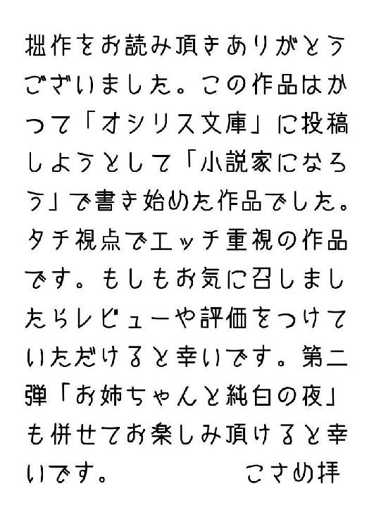
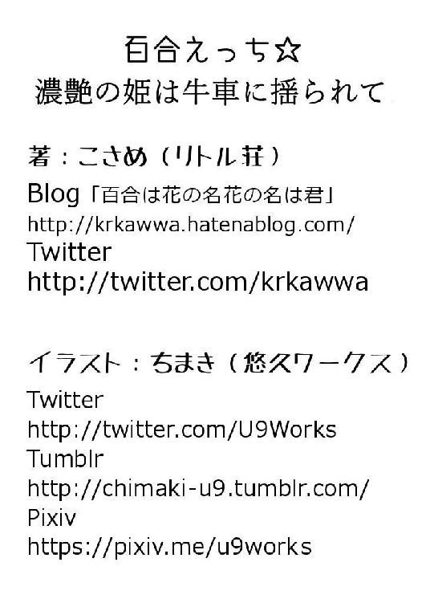

| 百合えっち☆濃艶の姫は牛車に揺られて 百合えっち☆シリーズ (リトル荘) | |
| こさめ | |
| (2016) | |
こさめ
その平和な村は名をえひめ村といった。
えひめ村は気温も土壌もみかんを育てるのに最適の環境にある。
国の王の食卓にのるほど、素晴らしいみかんを量産することで有名だ。
その濃厚な味わいをもたらすのはみかんだけではない。
この村で最も大きな農園を所有する雲集家。最初はただの農作物として栽培されていたみかんを、王宮御用達となるまでの『名産品』に仕上げた名家だ。
この雲集家の主が、私、雲集おきてだ。
誰もが眠る丑三つ時。
雲集邸からは、今夜も、愛らしいあえぎ声が頻繁に発せられている。
「ああ、あっ、うっ」
少し苦しげな声が、切なげに夜のしじまを打つ。
雲集邸は、典型的な和式住居だ。ただし、ばかに広い庭園と何十畳もある大広間がいくつも蔵されている。そのため、どんなに大きな声を出しても、近隣の家までこの声が届くことはない。
上級の固綿の敷き布団の上で、娘は柔らかな肢体を躍らせている。
この村には学校と呼べる教育機関が存在しない。だが、これは王宮都市から遠く離れた村では珍しいことではなかった。それぞれの村はそれぞれの名産とする果実や穀物の栽培に専心する。勉学よりも、その大地の恵みをはぐくむことを幸いとして疑わない。
殆どの村の民たちは、生まれた土地を愛し、その風土の維持を祈る。国そのものが、平和であるためだ。
そして、この国の名はノーエン王国という。
そう。ノーエン王国のえひめ村には、愛らしい少女らが暮らしている。あまりに美少女が多いのは、恐らくそうした遺伝子のせいだ。それを王に目をつけられ、ある程度の年齢に達すると少女らは王宮へと『出荷』される。つまり、王の妾として献上される。
非人道的なこのしくみに異を唱える者もかつては存在していた。しかし、娘たちのほとんどが田舎よりも王宮の華美な生活に憧れてそれを受け入れる。家族たちも寂しがりはするが、実際にそれだけ生活は豊かになる上に、少女らの里帰りも認められているとあって反対する者は少ない。
しかしそれだけの対価がもたらされるのは美しさだけが理由ではない。伝統的に村の女たちは出荷の前に訓練が行われる。王を満足させるだけの性的な技術を教え込まれるのだ。
その教官が私だ。私は女でありながら男のモノを有している。血族すべてがというわけではないが、何代かに一人は必ずこのような体を以って生まれることになる。それはこれまで続く少女らを献上するしくみと無関係ではないと言われていた。
かつては神聖な存在を祭る司祭であった祖先が、必要にかられてさまざまに近親婚や優性遺伝を目指した婚姻を繰り返すうちにこうなったのだと言われている。私たち一族は村にとって欠かせない役割を負っている。
女としての体が出荷前の少女たちに必要な開発を施し、そして男としてのモノで彼女たちに技術を教え込む。
そして、今夜も私は出荷前の少女の体に快楽の何たるかを教授していた。
「ああっ...うん...う...」
私の腕の下で、その肉体を弾ませている。彼女は、この行為を必要だと思い込んでいた。この村では、この教育は儀式と称されている。それは、村の民からも、邸内の侍従たちも公認の行為なのである。この儀式が村の繁栄につながると信じられている。
娘らは村のみんなの幸せにつながる行為が好きだ。
今私が教育している少女は両親がいない。老いた祖父母のためにも彼女の身売りは必然のものだった。
「おきて...さまあ...気持ちいいですぅ」
彼女には素質があった。動作には張りがある。みかん栽培の苦しい労働のなかで培われた筋肉が、夜にはこうして活躍する。彼女の肌は太陽を一杯に浴びて、黄金のように艶やかに日焼けしている。だが、少しも下品な印象を与えない。それは、その皮膚の肌理が細やかなせいだろう。そして弾力のある大きな胸。硬いしこりも含めて揉みしだいてやりながらも、私は注意する。
「こら...行為の最中に私の名を呼ぶのはご法度だぞ」
奇しくも出荷される身の上なのだから、私個人を個人として認識してもらっては困る。
うっかり王の閨で王以外の者の名を口にしないとも限らない。行為の間は思考力が停止し理性が働きにくい。無意識に教官の名を呼んでしまうようでは妾失格だ。
それを防ぐために教官の名を呼ぶことはしないように義務づけられていたはずだ。
「だってぇ...おきて...さまっ...に...こうされるの、好き、すぎてっ...」
「仕方のない奴だな...せめて王様とお呼び。私が王だと思っていれば名を呼ぶことはないだろう」
「はいっ...王様...ごめんなさい...」
素直な態度につい笑ってしまう。優しくお尻を撫ぜてやると、少女は嬉しげに私にすりよってきた。
「だからっ...王様っ...もう...ほしい...のぉ...」
「もう、か？」
いささか驚いた。
「だ、め、ですかぁ？」
瞳を潤ませながらも少女は大胆に太腿を開いた。花芯の表面が潤んで光る。
「いや...欲する間隔が短くなったのはいいことだ」
私は自らのものを掌で支えると、その先端を少女の泉の源にあてがった。
「はあっ...ん......んん...」
ちゅぴっと音がして触れただけなのに、少女は全身をわななかせた。
「いくよ」
「はっ...いい...おう、さまぁ...あんっ」
彼女は先日処女を喪失したばかりだ。王の閨では血が忌み嫌われるために、出荷される少女たちは必ず処女を捨てていなくてはならない。それこそが私が負う役目だ。
彼女の浅瀬にものを侵入させると、少女は気持ちよさげに瞳を閉じた。まだきゅっと狭い柔らかな管。その浅い岸辺に横たえた亀頭で、やさしく、やさしく、管壁をこすってやる。
「ああ、う、うん、うんんっ、おう、さまあ」
口元には微笑が浮かぶ。気持ちいいのだろう。彼女はもう子供ではない。だが、その声はまだあどけない童女のように甘やかだ。その声で、私を王様と呼ぶ。
「いい子だ。かわいいよ」
「ああん、あっ...王様...はああっ」
私は、掌をいっぱいに広げた。ご褒美に胸を揉んで刺激してやる。
今は正常位でつながっているため、乳房を鷲づかみにできる。弾力があるが、まだ膨らみかけのおっぱいだ。だが、こうして、掌いっぱいに掴んでみると、その脂肪がそれぞれの指の隙間から、ぷにぷにっと盛り上がって丘をかたどる。それを見た限りでは、この娘も日々成長しているのがよくわかる。その中指と人差し指の隙間からあらわれた、ピンク色の乳頭を、指の腹同士できゅるっとこすってやる。
「ん、ああンっ...」
少女は敏感に腰をくねらせた。その途端、私の先端がきゅうっと締め付けられる。少女は涎を垂らしながらしきりに吐息する。
「少し腰を浮かせて自分でも動いてごらん...」
快楽に慣れつつある体にそう要求してみる。
「そ、そんな、ことっ...」
「大丈夫、手伝ってやるから...そら」
腰の下を腕で支えるようにして浮かせてやる。すると接合部がよりきつく絡み合い、少女はあまりのことに驚きの声をあげた。
「ひゃんっ！ これっ...らめえっ...ああっ...気持ち、よしゅぎちゃいまひゅ...」
「だめだよ、自分ばっかり...ほら、腰を動かして」
「ああん、はいいっ。わかりました、おうさまあ」
少女はこくんと頷いた。
「あっ...あっ...あっ...こうですかあ？」
少女が腰を揺らすと連結した箇所から愛液の混じる音がくちゅっ、くちゅっとリズミカルに鳴った。
「そう...いいよ、いやらしい音が聞こえるね」
「あっ...いやっ...王様...恥ずかしい...」
笑みをもたらす感触が払拭されてきた。少女の薄く開いた口からは、しきりに吐息が漏れている。一方で私自身も性器全体を呑み込まれ少女の体内で扱かれながら鳴動される感覚に没入しそうになる。
私の性器は精嚢があるわけではない。あくまでもこの性器は女性器が異様に発達したものだ。相手を妊娠させないままに処女を逸脱させることができる道具だ。だからこそ、村の人々には重宝されるのだろう。最初は支配していたつもりが、快楽を覚えた少女は次第に積極性を帯びてくる。
そうなれば教育は終了だ。
「あっ...ああん、いいっ、いいっ、もっと、動かしてえ」
恥ずかしいと言っていたのが、いつの間にかおねだりを始めている。動かしてと言っているが、私は自ら腰を動かしてはいない。無意識に彼女の腰使いは熟練したものになり、私の先端部を求めて押し付けられる奥の開きは自在に伸び縮みしながら求めている。
「いい動きだ...」
これなら王に差し出しても恥ずかしくない。
「今夜で過程は終了にしよう...合格だよ」
「お、う、さま...ほんと、に...？」
感動して少女の目が潤んだ。
「ああ...さあ、もういいよ。後は私がやってやる。楽におなり」
そう告げて腰を両腕で引き寄せてやると、少女は全身を弛緩させてきゅっと目を閉じた。
ぐ、と力を入れてその奥までモノを突き入れる。
「ひゃうああっ！」
少女は嗚咽に近い喘ぎをあげて背中をしならせた。
「んんっ、あ、あああ！」
気持ちよさげに口の端に唾液を垂らす。
首筋に掌をあてて、押さえ込むように頭部を枕に押し付けてやった。
「そのまま肩から力を抜いて...そう、そうだ。お尻は下げちゃだめだよ」
「んっ...ふっ...はい...あ...あん...」
健気に返事をしながらも、高い位置にあげた尻を揺らしている。
ひどく扇情的だ。
そのまま、愛液で一体になった蕾に、私は自身の突起物を前後に出し入れする。
「んんっ...うあっ...ふっ...あっ...ああん...」
この儀式を始めたばかりの頃はまだ、硬い蕾のようだった。それが今はこんなに熟れている。ぴちゅぴちゅと音を鳴らして、すっかり能弁になった。
こうやって少女が仕上がっていく様を眺めるのは、私にとって一種の愉悦でもあった。
一方で、どうしても拭えない。
違和感と、寂しさ。
私の肉体はつまり男であり、女であり...しかし、そのどちらとしても機能することを許されない。
神的存在とされながら、こんなにも深く少女たちとつながりながらも、これはただの儀式だ。
少女の肉体に恋をしてはならない。
これは商品だ。
少女の心に私に対する恋情を宿すことはご法度だ。
これは王のもの。
私のものではない。
「あっ...おう...さまぁ...」
だからこそ、少女に自分の名を呼ばせることを許せない。
例えどんなに彼女の熱が懇願しようとも。
やがて息が荒くなってきた。
執拗な腰使いで少女を穿つうちに、疲れが生じるのは自然なこと。
けれども一方で手足が痺れんばかりに彼女は求めてくる。
もっと、と。
愛らしさに微笑したくなるのを堪えて、私は囁いた。
「いい子だ...」
彼女の好むところを狙って、先端を押し上げた。
「あっ...！ ......！ ......ひ、あんんんんんっ...！！」
全身をわななかせたかと思うと、愛液の源がその潤みを増幅させながら収縮し力む。
「っ......！」
悶絶し、少女は果てた。
枕に脱力して横たわる頭を腕で抱きとめてやる。
胸のうちに暗い焔が宿る。
この仕上がりの瞬間の達成感と、相反する虚しさ。
私の名は王様ではない。
私は王ではない。
私には名前があるが、こんなにも激しい最中にもこの名を呼ぶことを誰にも許さない。
禁じるのはこの口であり、躾を施すのはこの掌だ。
けれども疑わしい。
そろそろ疑わしくなりつつある。
私に心がある、などとは。
それでも陶酔しきった目で少女が仰臥するとき、その瞳は確かに私を見ている。
口の端に笑みを浮かべて抱きしめてやった。
「おきて様っ。おでかけですか？」
「ああ、郵便を出しに」
屋敷近くの農園前で、休憩中の娘たちに呼び止められた。
この村には郵便局がひとつしかない。
村の長の構える馬場付近に設けられている。
王宮へあがる少女はそれきりにせず、その後の消息は郵便で確認される。王都での少女たちの働きぶり、また役目の変更や、健康状態など、担当者から必ず定期的に書面で知らされる。それを読み家族らに話して聞かせるのも私の役割だ。そして、こちらの様子を返答する。
あの娘は器量がいい、この家の主が娘を王都にあがらせたがっている、といった情報を知らせるのだ。
昼下がり。作業の合間に、少女たちは車座になって果樹園の端に集う。ござを敷いて、着物はもろ肌脱いだ格好だ。その胸は丸いのも小さいのも、野放図に空の下に晒されている。一向隠す者もいない。中にはすべて衣類を打ち捨てて寝転がっている者もいる。
胸を丸出しにすることが恥ずかしいという心持は、王都の少女でもなければ持ち合わせていない。教育を施すときには、そうした知識を植えつけるのも私の役割だったが、その役目を負わない彼女たちにうるさく言うつもりはなかった。
「わあ。私のお姉ちゃんは元気ですか？」
一人が走り出て腕にじゃれついてくる。十をすぎた少女だ。姉に甘えたい盛りはすぎているだろうが、離れて暮らすのは寂しいに相違ない。
「おまえの姉さんは元気だよ。今度、書記の世話付きになったそうだ」
「しょき？」
「そう。偉い人のお世話をする係になったそうだ。仕送りも増えるだろう」
「わ、すごい！」
少女は頬を紅潮させる。けれど、少しだけ目を潤ませた。
「でも...いっぱいお金もらえるのも嬉しいけど、あたし、お姉ちゃんがそばにいてくれる方が嬉しいなあ...」
俯いてしまった少女の頭を撫でた。
「...そうだな」
本当にその通りだ。
誰よりも、私がそう願っている。
村から、もしも、一人でも王の目に留まる娘が出て、その者が然るべき立場につけば、多くの少女たちを王宮にやらないで済む。しかし、それが叶わない。
慰めるように少女の額に口付けた。
「おまえが王妃になれば、いつでも姉といられるよ」
欺瞞を私は口にする。それなのに、少女は瞳を輝かせる。
「本当？ おきて様」
「本当さ。王妃になれればな...」
「なる！ あたし、なるよー！ だからおきて様、そのときは色色教えてねっ」
胸を押し付けるように背伸びすると、少女はこちらの口に吸い付いてきた。
「あーっ、ずるい、あんた！ 教義受ける期間の前はそんなことしちゃいけないんだよっ！」
「いいんだもーん。ねっ。おきて様っ」
「今回だけな。ほら、仕事にお戻り。皆もよく休んで励めよ」
「はーい！」
あのように放埓な少女たちも、一度こちらの指をくぐればしおらしくなる。
昼間、そのことを知る者はいない。
白昼の陽光に目を射られる思いで、その楽園のような場を離れた。
☆
郵便局では、紫紺染めの着物の少女たちが働いている。
彼女たちは村の出身ではなく、試験を受けて職に就いた者たちだ。
どこか怜悧な雰囲気に満ちて、ここだけはいかにも村とは切断された空間だ。訪れる者も殆どいない。郵便が届くのは数日に一度だ。
「おきて様、お待ちしていました。特別書簡が到着しています」
少女の一人が書類の何通かを私に手渡す。
「特別書簡？ ああ...ありがとう。これを出してください」
「承りました」
少女は窓口の台のあちら側へと戻っていく。
特別書簡は王宮専用の郵便で、あてられた者と直裁的なやりとりをする折に用いられる。特別の用事とは、例えば王宮へあがった少女が重い病気にかかっただの、粗相をしただの、他者に聞かれるには憚られる知らせの場合だ。
しかし、滅多によこされるものではない。年末年始の王宮の催しに、ありがたくも召致されることはある。しかし、今は若葉ほころぶ季節だ。
不思議に感じながら葉書を開いた。
その場で中を見て、すぐに返信を出せるように往復葉書になっているものだ。
それを一読して、私は軽く眉をあげた。時候の挨拶に続き、近々、王の第三王女がその村の付近に避暑で遊びに参られる旨が綴られていた。そして、その村に名高い雲集おきてにとって、村に危険はないか予め知らせよといった内容の文書だった。ただし、騒いではならぬ。王女は静養に参られるのであって、長を除く村の者には知らせるな、とも。
私は係から筆を借りると、局内の机に向かい、その場で返答を綴った。
一向、危険はございません。もしよろしければ、長か私の屋敷に身をお寄せください、と。
驚いた。これは好機だ。もしもこの村が直系の王女のお気に召すなら、娘たちも農産物も特別に目をかけてもらえるかもしれない。
好機は逃してはならない。局を出てからの私が足早になったのも自然のことだった。
☆
期待に反して、一向に返事はこずに何週間かを経た。
日差しは日に日に強さを帯びて、夏が近づいていた。
その夜、久々に務めから解放されて私は縁台に涼んでいた。先日まで丹念に仕上げてやった少女を一人、目出度くも王宮にあがらせた。家族らは祝い、村の者たちは総出で着飾った少女を迎えの場所に送り出してやる。
寂しさに泣き出す者もあったが、旅立つ少女はいい顔をしていた。あれなら安心だ。私の胸は満ちていた。しかし、一方でまったく便りのないことが気がかりでもあった。あるいは、王女はもっと豊かな思い定めた地に出向かれたのだろうか。それはそうかもしれない。不安と昂揚のないまぜになった気持ちに、久々の酒を取り出して一人呑む。そのうちにやがて醒めた気持ちに陥る。
この土地は本当にいい場所だ。少女らも素直で、気候もいい。是非いくらでも逗留をすすめ、あの果物やあの酒を献上したいなどと子供のように考えていた。けれど、落ち着いて考えてみれば、不思議な話だ。何故唐突にこのような僻地に王宮がめぼしをおつけになるものか。一体、このちっぽけな村の何が王女のお耳を楽しませたであろう...ふと、そこに思いが至り、顔をあげた。もしや、王都で何かあったのではないか。こんな僻地に王女が追われなければならないほどの、何かが。
空には満月。冴えきった輝く月を見ているうちに、けれど、それも馬鹿らしいと思えてきた。
なんだか全てが空しく感じる。
そろそろ寝ようと立ち上がったときだ。
庭前を行く者の気配があった。急ぎ、慌てたような者たち。男が数人。私は はっとして屋敷へ戻り駆け急いだ。
何者だ？ 明らかにこの村の者たちではない。横切ったときに高垣の向こうの者たちの姿が見えたわけではない。しかし、この村の男たちは、力もあり体力もあるが、あのように洗練された機敏な動きはしないものだ。
奥の間の刀を素早く手にして、戸口へと立つ。
既に数人、戸の前に待っているのがわかった。その一人が、戸を叩いた。
「雲集殿」
しじまを打つ呼び声。
「何者です」
男たちは私が戸の裏にいることに驚いたらしかった。しばし沈黙した。
「お休みの折、申し訳ありません。雲集家のお方であれば、この戸を開けてください。王宮からの便りをごらんになったあなたなら存じていましょう。王女がこの付近に参っております。実は協議の結果、この村への逗留を秘密裏に決め、お忍びで街道の宿に滞在することになりました。しかし、内密にしたことが災いし、不埒にもわれわれの馬を盗んだ者が出たのです」
私は絶句した。村から随分離れているが、確かに王都に続く街道には夜盗が出ると聞いたことがある。何と無謀な。王宮側も野党側も互いに不遇としか言いようがない。
「幸い、警邏が気付いて、野党は皆捕縛され馬は戻りました。しかし、姫の御身の素性が知られ街道の警察らがもてあましております。調査のため宿にはおられません。かといって、王女を警察などに預けるわけには参りません」
「あい、わかりました」
私は戸を開いた。
「王女の御身、僭越ながらお預けください。何ならこのおきてめは屋敷を空けてもようございます」
そう告げると、男たちは切羽詰っていたのか、一斉に嘆息した。
どうやら苦労が多そうだと察した。
「それにしても、基より村へ逗留くだされば良いものを...街道の宿とは」
「はあ...われわれもそう思いはしたのですが、何分王女のお考えはわかりません...」
ほとほと参っている、と言いたげな男たちの顔に私は破顔する。
「王女の逗留に充分な屋敷ではございませんが、できる限りのもてなしはいたします。あるいは、姫様はお疲れでしょうか」
「はあ。実は入浴と食事の前にやられまして」
「では、わかしておきましょう。いつでもどうぞ」
「ありがたい。すぐに姫を迎えに参ります」
一同は頭を下げた。
そして、一時間もしないうちに牛車が到着した。
☆
その方が牛車から降りたったとき、私は地に膝をついていたので姿を見ることはかなわなかった。
ただ、清廉な花の香りが漂ってきた。
「あなたが雲集殿ですか」
「はい。この度は災難に遭われたと伺っております。姫様におかれましては不足もありましょうが、精一杯お世話させていただきます」
王女は市女笠いちめがさを被り、その布は長く垂れ顔を隠していた。
「突然の訪問にも関わらずそのようなお心遣いをありがとうございます。顔を見せられない無礼をお許しください」
「いえ。姫様の御身分を存じ上げておりますれば、当然と感じます」
「ありがとうございます」
なんというお優しい声だろう。
村の娘らも、なかには、これぞと思われる美しいのはいる。しかし、このような落ち着きと安らぎに満ちた甘やかな旋律はみられない。
「お疲れにございましょう。風呂をわかしてあります。お食事もございます。こちらへ」
屋敷に訪れたのは姫と、お付きの者が数名。あとは警察からの聴取や見張りにまわっている。
いくら緊急時とはいえ、村に大勢で押しかけるのは目立つし、かえって姫の気が休まらないからという配慮からだ。
つまり一晩、本当に私は食事から就寝まで世話を任されたのだ。
しかし、あくまでも顔を見ることはかなわない。
食事は姫のおわす部屋の前に運び、入浴も案内をするまでだ。
そう思っていた。
しかし、食事を運び終え、廊下の端で世話役の一人に呼び出された。
姫が風呂に入るのを嫌がると聞かされた。
「やはりこのような屋敷ではご不満でいらっしゃるのでしょうか？」
「いや、それが...申し上げにくいことに、姫はいつもお体を世話役の娘に洗わせるのです。しかし、娘は今日の騒ぎのうちに失神しましてな」
「では、私に姫様の体を洗えと？」
「左様。引き受けてくださいますか」
「恐れながら、そのような身分にはございません...貴い立場の若い娘に許されることにございましょう」
王族の姫の世話役は尊い立場の者か、選ばれた者のみと相場が決まっている。そしてそれは特に初潮前の穢れのない娘でなければならない。
「第一が姫の裸身を目にするなど、死罪に値します」
「もちろん、我らはそのような罪を強いるつもりではない。ただ、場合が場合だ。女がほかにおりません。今回は特例として容赦されます。ただし、目隠しを願いたい」
目隠しをしたまま姫の体を洗えというのか。特例とはいえ、難儀な申し付けに眩暈を覚えた。
「そのような器用な真似...何か間違いを犯して姫の機嫌を損ねるのは恐れ多くございます」
「いえ...しかし、姫様はあなたに引き受けてもらいたいと仰せです」
「私に？」
「少しくらいの不躾は許されるそうです。ただ、見ることをさえしなければ良いのです」
「いかに姫様が容赦されましょうとも尊い方の裸身を私が見るようなことがあれば...無事ですまないことにございましょう？」
男は床に手をついた。
「左様。姫様にすればただのご静養。われわれとて、粗末に民の命を奪うことは憚られます。しかし、あのように無邪気な方も尊いお立場。そのときは...お覚悟なされませ」
とんでもない事態になった、と私は自覚した。
「顔をお上げください...私も私の立場を存じております。その時はその時。仕方ありません」
目隠しして王女の体を洗えというのか。失礼をおかさずに？
しかし、幸い、私は娘の体のことならよく知っていた。不快を与えず、綺麗に洗うくらいならこなせよう。
それで駄目ならそれまでだ。
☆
風呂の戸の前には二人、長い刀剣を携えた男がいた。
目隠しの布を渡される。
「先に入ってお待ちください。姫が後から参ります」
「しかし、失礼のないようお気をつけを」
「わかりました」
脱衣所に着物を脱ぎ捨て、湯浴み用の薄衣1枚になる。
風呂場に入り、風呂の桧椅子に腰掛け、目隠しをして待つ。
すぐに後から人の気配がして、戸が開かれる。湯気の向こうに優しい声が聞こえた。
「おきて殿...何から何まで申し訳ありません」
「いえ。私こそ思い至りませんでした。世話役の不足もありましょうが、こちらへどうぞ」
「一切、あなたにお任せします」
ひたひたと風呂場に渡る足音は少女たちの気配とかわりない。教義を施した少女と一緒に風呂に入ることも多い。あれらと同じ空気だ。つまり、姫様は今私の目の前で本当に一糸纏わぬ姿なのだろう。
しかし、これまで感じなかった緊張を覚えた。
何が同じものか。
あの少女らは果実のように健康な肉体をもっているが、目の前の姫からは嗅いだことのない甘い香りがする。
眩暈を覚えそうな芳しい香りだ。
私は手桶のうちに泡立てた布をひたりとその首筋であろう箇所にあてた。
「加減が強ければお聞かせください」
「大丈夫です...」
私は丁寧な仕草で姫の背を洗い流していく。
滑らかな肌に布をそわせる。
入浴中であるから触れるのを容赦されているものを、本来ならば触れることも重い罪に問われる肌だ。
陶磁器を扱うように力を加減する。
「おきて殿...姫からお詫び申し上げてもよろしゅうございますか」
「お詫びとは？」
「私たちのことです。この村の付近に向かうと決めたものの、やはり騒ぎになるだろうと家臣たちから進言を受けて、屋敷を訪ねるのはよして、ただ近隣の宿に居を定めましたことです...」
「そのようなこと、お気に病むことはございません。あなたのような方がお気になさいますな」
「ありがとうございます。おきて殿はお優しくいらっしゃる」
「お言葉、もったいのうございます」
内心で姫の謙虚さに舌を巻いた。このように気遣いできるものだろうか。
しばし沈黙がおりた。
私は、ふと眉をあげた。
この体の香りは尊い立場の人の用いる香の匂いであろう。
面前の姫からいっそうかぐわしいような匂いを覚えた。
女子の体に慣れた私でも、くらりとくるような香りだ。
ふりきるように、問いを発した。不躾とは知りながら、そうせずにいられなかった。
「私からもひとつお尋ねしてよろしゅうございますか」
「どうぞ」
「何故、街道沿いの民宿に...宿であれば他にもよろしいところがございましたでしょうに。いえ、咎めるのではありません。ただ...」
ふふっ、と姫が肩を揺らして笑うのが伝わってきた。
「そうですね。ご厄介になっているのも、そのせいですから...それでも私は人の多い民宿がようございました。何故って...その方が民の様子がわかるでしょう？ とても面白うございました。家族連れや友達と旅をする皆様の様子を知るのは...」
「...それで民宿に？」
「そうです。おきて殿...私は...夜盗に遭ったときですら、内心ではわくわくしていたのです。こんな体験は二度とできるものではないと...」
何と返してよいかわからない。
身を呈してまで民の様子を知りたい、とは...好奇心がすぎるのだろうか。それとも、もしや。
私が黙ったのを知り、姫は口調を改めた。
「ごめんなさい。きっと呆れたことでしょうね。退屈な姫のわがままと...そう見えたでしょう？ でも、私は...知りたかったんです。例え城の暮らしが保証されていようとも...私は、あまりに...」
「...あなた様の立場であれば、お退屈も当然でしょう。...お寂しかったのですね」
そう声をかけると、今度は姫が声を失った。
気を悪くしたかと懸念したが、すぐに姫はこう仰せになった。
「おきて殿...この話は誰にもなさらないよう願います」
「もちろんです」
それを私は肯定ととった。的を射ていたのだと安堵したが、続く言葉に瞠目した。
「それから、その...ひとつ、私の願いを聞いていただけないでしょうか」
「はい」
否やはない。
「そ、その...先ほどから、あなたの手つきは心地ようございます。世話人に任せるのは背中だけという決まりですが...前も洗っていただけませんか」
「姫様、それは...」
そのような僭越、許されるものではない。
「お願いします」
言うが早いか、姫がもうこちらへくるりと体の向きを変えたのがわかった。
「し、しかし...いかに目隠ししているとはいえ、姫様、あなたは幼子でもございません。私めが失礼するわけには」
「お頼み申します、おきて様」
ひた、と私の手をとったかと思うと、姫は自らの胸元へ布を私の掌ごとあてた。
私は声をあげそうになったが、堪えた。
もしこのような姿が見られれば、どのような責め苦を負わされるかわからない。しかし、姫の気配から、恥ずかしさに打ち震えているのが伝わってきた。
何故、そのように恥らいながらも懇願してくるのか。
「こちらが、腕です。どうか、おきて殿...お願いします...」
「...では...」
疑問を抱きながらも、優しくその腕を撫で洗った。布越しにもそのか細さがよくわかる。
「こちらが、首です...そう、肩も...」
ひたりと姫が身を寄せているのがわかった。ほのかにその身が上気しているのも。
おぼろげにも感じられてきた。姫は興味を抱いていらっしゃる。
私にか、あるいは...性的なことにか。
わからないが、姫の年齢を思えば当然のことでもあった。しかし、今までそのような体験を得る機会はなかったのであろう。
何を無謀なと考えていたが、姫にとってはそうした体験をえる貴重な機会ととらえられているのかもしれなかった。
私は覚悟を決めて、臆すことなく姫に従いはじめた。
「こちらが、腹...そう...」
少しだけ、姫の呼吸が乱れた。
「こ、こちらが...胸です...」
「姫様...」
少女の胸に躊躇したことなどない。
しかし、張りのある果実のようなそれに、姫は私の両手首をとらえたまま布越しに掌をあてがうように引き寄せてくる。
「なりません、このような不躾は僭越に畏れ多いことです」
「で、でも...その...ただ洗うだけです...おきて殿...」
「姫...」
「奇妙にお感じでしょうね。けれど、姫は嬉しいのです...母や姉とは早くから引き離されて、おきて殿のような年齢の方に甘えるのは久しく...幼い頃はみなで一緒に入浴されるのも許されておりました。けれど、成長したというだけで、急に大人になれと言われても...姫は...」
「...わかりました。もう何もおっしゃいますな」
姫の声の震えているのに気付いて、私は思わず遮っていた。
「ひとときなら...」
布を広げて、そっとその弾力のある丘に添えた。
「私をお母様やお姉様とお思いください...それなら」
「っ...」
少女がかすかに震えるのがわかった。
布越しにその膨らみが掌に伝わってくる。洗うには大きすぎるたわわな果実だ。
私は先端部に触れないように気遣いながら、柔らかく手首を前後させる。
はっ...と、姫が吐息を漏らして緊張したような気配。
「痛うございますか？」
「んっ...平気です...そ、それより...くすぐったいくらいです...」
「......」
私は黙した。この反応は尋常ではない。
「も、もう少し...力を入れてもようございます。おきて様...」
寄り添うように姫がその双つの丘をあらわな態度で私の胸へと押し付けた。さすがに私は戦いた。彼女の奥にある熱く滾るものに気付いた。
「なりません、姫様」
声を荒げた。
「どうして？ どうして...嫌がるの？ ねえ、お願いします。お顔を見せて...そして、姫を見て...」
「姫様っ」
その指が私の両の頬を包むようにして、ついに目隠しをずらした。
「！」
現れた眼前の姫は繊細な造りの世にも愛らしい顔立ち。
しかし、その瞳は熱情に潤み、頬を上気させていた。
「お願い、おきて様...」
「なりませんっ！」
再び声を荒げて身を引いたときだ。
「姫様、いかがなされました！」
「おきて殿！」
外から男たちの声がしたかと思うと、
「姫様、御免！」
戸が開かれた。
身をすくめた姫は布に身を隠したが、私の目隠しが外れている姿も、姫の裸身を直視したことも一目瞭然だ。
「おきて殿！」
鋭い叱責の声とともに、私と姫の間に男が割り込み。私の眼前に刃が突き立てられた。
「お約束を違えましたな！」
私は息を呑んだ。
そうして、気が遠くなるのを覚えた。
ああ。こんなことで。
こんなところで。
私は私の村を愛し、そして娘たちが果実のように明け渡されていくのを内心で悲しく感じながらも、せめて幸せであるように祈ってきた。
祈りながら送り出してきた。
そう、送り出してきた。
一人の少女を引き止めることをも許されず、私自身誰に執着することも許されずに。
けれど、この好機を得てその権利が得られることを望んだ。
その欲の報いがこれだ。
村を繁栄させるどころか、村から私というとが人を出してしまった。
娘どころか、名産のみかんももう王都は買い取ってくれなくなるかもしれない。もうおしまいだ。
私は。
私は......
☆
「下がりおれ」
すっと男の背後から冷気が漂ってきた。
あたりに漂っていた水蒸気がたちまち霜となり、私は寒気を覚えた。
男が慌てて退いた。
そして、平伏する。
第三の王女の目には冷たい光が宿っている。
いや、それだけではない。
実際に風呂場の気温がたちまち下がり、私は震えた。
風呂桶の表面から湯気が消え、薄い氷の膜すら浮きはじめた。
「これは...！」
私は息を呑んだ。しかし、男たちは彼女の起こす現象に驚きもしない。
姫の威圧感に戦いてはいるが、この現象に出くわすのは初めてではないようだ。
「この方に無礼を働くことは許しません」
冷気を帯びた姫の怒りに応じて部屋の気温も下がっていくようだ。
「し、しかし、姫様...あなた様の裸身と素顔を直視するとは死罪に値する重罪にございます」
「なりません」
「しかし」
「なりません！」
かっと少女が目を見開いた。
いけない...！
本能から危険を感じて身構えていた。
びょうと室内に風が巻き起こり、見上げると天井に鋭利なつららが瞬時に宿る。
と、思った瞬間、その天然の刃が床をめがけて成長し、男たちの体を床に縫いとめんばかりの速度で降下してきた。
私は咄嗟に湯殿の蓋を両腕で持ち上げた。
檜の蓋は大きな半円で二つあわせて風呂に被せるものだ。
だが、この場では盾になると判断し、それを氷柱に向けてぶち当てた。
ばきばきっ！ と破壊音があたりに響いた。
幸いにも氷柱は盾に遮られて砕け散った。
「おきて殿...庇うのですか、この者たちを」
攻撃を遮られて、機嫌を損ねたのか。あるいは、正気を取り戻したのか。
一段、怒りが収まったようだ。しかし、相変わらず生気を失った瞳がこちらに向けられた。
「ひ、姫様...畏れながら...この者たちの言うように、私は」
「言わないで下さい。許しません、死罪など」
「しかし」
「私が駄目だと言うのです...第一が、あなたは存じているはず。誰が求め...誰がいけないのかを」
「そ、そのようなことを」
男たちが聞いている前で、そのようなことを明かしてはならない。
そう咎めようとしたとき。
「おきて殿...あなたは私の裸身を御覧になった。平民がそれを許される術がただひとつございます」
死罪から免れる手立て。
私はそれを知っている。
しかし、それを命じられようとは夢にも思っていなかった。
「あなたが姫の世話人となることです」
「姫様、それは...」
男たちが驚いた。
「そのように唐突に引き立てるなど、姫様...」
「唐突に死罪などと申し渡すよりは遥かによい手段であろう。文句あるまい？」
命じることに慣れた者の声でそう言われては、男たちはただただ頭を下げるばかりだ。
「ただし、おきて殿。あなたを二度と村に帰すわけにはいきません」
「いいえ、姫様...」
例え死罪を免れようとも、それでは同じことだ。
私という教育係を失っては、村の存続は望めない。
「おきての罪は明らかでございます。私がいなくなれば村は稼いでいくことができません...それならばいっそ潔く死罪を受け入れて、罪を漱がせていただきとうございます」
「おきて殿、安心なさい。あなたを世話人として引き立てる代わりに、村には皆が安心して暮らせるだけの褒美を与えましょう。あなたという誉れを私の元に送り出した褒美に」
それを聞いたときの驚きは常ならぬものだった。
たった一晩、世話しただけの自分にそこまで入れ込んでくれる理由とは何だ？
不気味としか言いようがない。
死罪も駄目。
この地に生きることも許されぬ。
そして、あの氷の体質...あれは魔性の術そのものだ。魔性とは、この国の僻地に存在する妖怪に近づきすぎた一族のこと。
恐らくはこの姫は王の直系の一族ではない。
何がしかの事情があって、王家に引き取られた御方なのだろう。
そう気付いたが、確かめるような愚行は犯さずにただ傅いた。
私の願いは、今叶った。
村の永続的な安泰。その約束にどうして否やがあろう。
例え、もうこの村にも、村の人たちにも会えなくなったとしても...
「では、謹んで承りましょう。姫様」
膝を突くと、裸身の姫はほっと気を緩めた。
その気配に、またしても疑念を覚える。
何故、このお方は私なぞにそうまで執着しなさったのか。一向にわからなかった。
翌朝。私は王都へ移る支度を整えた。
あまりに慌しい出立に心がついていけない。
しかし、王女から、必ず後から村の長へ使いをやると約束されて私は応じた。
年賀の式典の折に必ず寄越される牛車とは異なる、遥かに広い牛車に王女と二人きりになった。
牛車の車箱は物見の窓もないがあと四名は乗れそうな広さだ。
私は王女との同乗を許された。
右前方におわす姫の隣に座した。
牛車の座が持ち上がりゆっくりと私たちを運びはじめる。
車座のうちはあの芳しい香で満たされる。
あの甘い香りはやはり車の香であったのか。
ただ鼻先で嗅ぐだけではなく、音に聞こえそうなほど甘い香りに全身が包まれる。
「姫様...」
昨夜から改めて伝えようと思っていた謝意を口にした。
「改めて、私を救っていただき、ありがとうございます」
「何を言いますの...おきて様こそ、突然にこのような引き立てに驚いていましょうに」
姫が頬を染めるので、私は微笑した。
「どうぞ、おきてと呼んでください。姫...あなた様は私の願いを叶えてくださいました。この村に永続的な安泰をもたらすこと。それがおきての願いにございました。もともとそのために娘たちを村に送り出していたのです。しかし、ある程度のお引き立てを頂いても、姫様のお世話役ほどの大役をおおせつかる者はありませんでした。まさか私がわが身を呈する光栄に浴しようとは思いませんでしたが」
「そうだったのですか...？」
姫が何故かひどく驚いたので、私は不思議に思う。
「では...その、少女たちの教育を施していたのは、村のためだったのですか？」
「ええ、左様にございま...姫様？」
「ひ、姫は勘違いしておりました...てっきりおきて様は少女を愛好する方なのだと...も、もしや、村には男性の恋人がおられたのですか？ ひ、姫は...とんでもないことをしたのでしょうか？」
たちまちあたりがふぶきそうに気温が下がってきた。
姫様の瞳は潤んでいる。
「何を申されます。とんでもないことなど...確かに私は教育係にすぎませんでしたが、いつでも愛情を抱いておりました。ただ、その...彼女たちは私のものではございません。心を交えることは禁じておりました」
「そういうことでしたの」
「ええ。恋人など滅相もない...雲集の一族は代々、子孫繁栄のために奉仕する立場にございます。私のように特別な肉体をもつ者は婚姻せず、家庭を構えるのは他の者にございました」
「そうなのですか...」
「しかし、私が...誉れ高きお役目を授かったのです。これは僥倖にございます」
私はそっと姫の掌をとると、恭順を示して口づけた。
「生涯、あなたに尽くします。どうぞどのようなことでもお言いつけください」
「......！」
姫の頬が染まる。
「いやです、そんな堅苦しい態度では...」
急にこちらの胸のうちに身を傾げ抱きついてきた。
「ひ、姫様」
「言いましたね。私のまわりに安心できる年上の方は少なかったのです。ですから...」
きゅっと目を閉ざした。
「しかし、私の身分では軽々とあなたをあやせるような立場にございません」
「どのようなことでもきくのではないの？」
「そ、それは...」
確かに、こうなると王女のためならば火の中水の中、どこまでも尽くそうという気持ちはある。しかし、姫の求めることが、そちらの、つまり閨のなかのことを示すとはまだ信じきれない。
「では、抱きしめてください」
「はあ...それくらいなら...」
恐る恐る、この尊い人を抱き寄せた。姫は心地よさそうにまぶたを閉ざす。
着物越しなら、大きな駄々をこねる日本人形を抱いているようなものだ。
「あなたは、本当に村のために尽くしてきた方なのですね...」
「はい。成果はなかなか得られませんでしたが...」
「...それも仕方ないことかもしれません。王は...父は、妾を仕方なく受け入れているのです。なかなかその寵愛を受けるものはいないのです。正規の王妃...つまり、母を愛しておりますから」
私はその言葉に沈黙した。
「けれど、貧しい村の者たちは、娘たちをもてあましてしまい...そうした現状を知っているからこそ後宮が設けられているのです。しかし、父は母一筋のお方。なかなか娘たちを特別扱いすることはありません」
その言葉は私を打ちのめした。
「そんな...」
呆然となる。
「では私のしてきたことは...」
あまりの己の愚かしさに眼前が暗くなる。
「おきて。あなたは素敵な人です」
姫が一層体を密着させてきた。
「その報いに、今、私が引き立てようというのです...無駄ではなかったではありませんか」
「確かに...それは、おっしゃる通りです。しかし...では、希望を抱いた娘たちは...まるで...」
「いやです、おきて。他の娘のことを今は言わないで」
私の首筋に怪しい冷気を帯びた腕がひたりとまわされ、耳元に姫は囁いた。
「ね...おきて...同じことをしてほしいの」
私は本意を図りかねて、思わず姫を見返した。
「その...娘たちに施したようなことを、姫の体にも...」
意味を解して、私はまじまじと姫を見下ろした。姫のその眩しい腿が覗かれるばかりに足が開かれ、私の膝上に乗り出してくる。私は自然、のけぞった。
「ご冗談を...あなたは下賤の民のように買われる身ではございませんでしょう。あなたは...」
「同じです！ いずれ私は隣国の王家に嫁することが決まっています。私の意思ではなく、この国の防衛と平穏のために、和平のために婚姻するのです」
「...しかし、あなたは尊い御方だ」
「......」
「その身を隣国の方々の前に私が犯すなど...それが知れれば即ち私の死を意味するでしょう。あなたの願いがそれならば、あなたは結局のところ私を死から逃してくださったのではなく、死に方を選ばせてくださったにすぎないということになりますが...」
「ごめんなさい...ごめんなさい。そんなつもりじゃないの。嫌わないで」
「嫌おう、などとは...」
姫はぽろぽろと涙をこぼした。
「......ごめんなさい...羨ましいの、村の娘たちが...きっと...私が考えているような暮らしぶりでないことはわかるの。でもあの子たちの日に焼けた肌が...あの明るい声が、羨ましいの」
「なりません...あなたより身分の低い者をうらやむなどと」
「私の氷の体質をあなたも見たでしょう？けれど、あなたの村の産物は...どうしても凍らないのです。私が手にしても、どんな不機嫌でも...それだけでなく、食すると涙が出そうなほどに胸が温まるのです...」
「......まさか、それが、私たちの村に興味を覚えたきっかけなのですか？」
一驚する。姫はこっくりと泣きながら頷いた。
私は袖でその頬を伝う涙を拭う。
「だから...あの...その娘たちから、あなたの話を、私は...聞き知っていたの」
「...では、あなたは...私の名をその者たちから聞いたのですか？ どうやって？」
「私が時折後宮でひらくお茶会で...あの子たちがあんなに幸せそうなのは、あなたの指をくぐったからだと思うようになったの」
言葉が出ない。それで姫は私に興味を抱いたのか。
けれど、村の産物にそのような効果があろうとは知らずにいた。
すぐにでも引き返して村の長や皆に知らせてやりたい。
その効能が全国に渡れば、更なる改良を重ねてもっと村に富をもたらすことができるかもしれない。そんなことを考えたが、引き返すことはかなわない。
それどころか、私の掌を姫はとんでもない箇所に導こうとしたのだ。
「お願い...ここを...」
「......！」
指先が腿の最奥に突然に導かれて、濡れた湿原の感触に触れる。
その下穿きもつけない部位に触れ、私は狼狽した。咄嗟に身を引く。
「姫、ご堪忍を願います」
ここに刃物があれば私は喉にあてていただろう。
「あなたに恥辱を与え死ぬならば、触れずに今ここで果てましょう」
「私に...触れたくないというの？ おきて」
「恐れ多うございます」
会話が噛み合っていないのはわかっている。だが、そう告げるよりほかにない。
「違う！ 違う...そんな言葉じゃない！ あなたの心を明かして！ 立場ではなくて。私の愛した人はそんなにも臆病なだけ？ それとも...私に魅力が足りないの？ あの子たちより...」
「滅相も...比べられるものではありません」
本当に滅相もないことだった。あの娘たちに見劣りするということがあろうか。
上気した白磁の肌も、形のよい乳房も、大また開きの腿も、すべてが扇情的だ。
「私が臆しているのです...私の行為は今や村の命運がかかっています。あなたが何を容赦されようとも、私たちと親交を結ぶ国の方々がどう思われましょう...」
しかし、姫は着物をするりと脱いでしまわれた。
途端に形のよい乳房と、その先端の張り詰めた桃色の突起があらわになる。
「姫！ 話をお聞きなさい！」
「触れなければいいのでしょう？じゃあ、そこで見ていなさい。それならいいのでしょう？」
「何を...」
「私が自慰するところを見ろと言ってるの！ 恥ずかしいんだから言わせないで」
「な、な、何を...おやめなさい！ それこそ王妃のなさることではない！」
慌てて両手首を掴んで止めようとすると、姫は振りほどいて、牛車の車箱の奥へとあとじさった。
「いや！ 触らないでよ！ 愛撫のために触るのをいやがったくせに、制止するためなら触るの？」
「それは...」
「み...見るくらいなら、誰もあなたが何かをしたとは思わないから...お願い...あなたが好きなの...話を聞いていたときから...初めて会ったときから...親しくなるにつれて......どんどん好きになって」
はあ、と少女はあえかな息をもらした。
そして、見せ付けるように自らの乳房を、そして、秘所を指先でいじりはじめた。
「とまらないの...」
私は固唾を飲んだ。
高貴なお方が放恣な表情に陥り、こちらを見ながらも陶然と乳を揉みしだいている。
「んっ...あ...」
見られているだけでもうそんなに感じているのか。
「姫...」
車箱の手前側で姫の痴態をまるまる鑑賞する位置関係になる。
「ごめんなさい...こんな姿...私、あの子たちみたいに発育もよくないし...性のこともよくわからないし...でも、あなたがそこにいて見られてるだけで、もう...」
一体、娘たちはどのような話をこの純真な姫に語ってきかせたというのか。
これは王都に到着したら聞き出さねばならない。
しかし、私の焦りに反して、姫から発せられる熱は留まることを知らない。
「ごめんなさい。でも、触ってもらえないなら、せめて視線くらいくれたっていいはずよ...」
「姫...」
なんとけなげで愛らしい方だろうと、引き込まれそうになる。
「ごめん...でも、お願い...軽蔑しないで...」
「そのように謝ることはありません...」
私は姫ににじり寄った。
「声をおかけしても？」
そう尋ねると、姫は驚きと恥ずかしさに身をよじらせ、目に涙を浮かべた。
「うん...」
こくりと頷く。
「もう少し腰を落とせば楽になります」
「こう...？」
あれほど積極的だったのに、声をかけただけで赤面する。しかし、素直に腰の位置を下にずらし、車箱の壁に凭れるような姿勢になった。
「そうです。よく見えますよ」
「やっ...」
びくん、と姫の体が跳ね上がる。
ただ、見ているだけなのに、そんなに鋭敏な反応をされようとは。
恐らく平生から自慰をなさっているのだろう。
まさか、私を想像しながら？
そう考えると、あまりのことに眩暈を感じるが得心もいく。この発情期の猫のようななつき方も自然だ。
悪いお人だ。
触れられぬものを。
「おきて...もっと...何か言って」
くちゅ、と、姫の湿原はすでに音をたてている。
「教授して...」
はあ、はあ、と息を荒げながら教えを請うてくる。
「左手で反対の腿を支えてください」
静かに告げる。私のうちに不埒にもいつもの教師としての一面が生じてきてしまう。
「ん...」
真っ赤になって腿を支えると、足が更に開かれてしまう。
「だめ... こんなの恥ずかしい」
「そうすれば更によく見えます。見てほしくないのですか？」
「ん...」
素直な反面、恥じらいを見せる。
わざと私が挑むようなことを言うと目を閉ざし堪えながら、ゆっくりと足を押し開いた。
「いいですよ、姫の蕾は愛らしゅうございますね」
「あっ...や、やだあ...褒められたら、余計...」
丸見えになった箇所から、とろみのある愛液が押し出されてきた。
「姫...指をおさめて、ゆっくりこすってごらんなさい」
「あっ...はあ...あ、あん...」
ぴちゅぴちゅと忙しかった水音が、教えに従い、ゆっくりとした旋律に落ち着きはじめた。
ぴちゅ...ぴちゅ...
ぴちゅ...ぴちゅ...
「ん...くう......」
堪えながら快楽に浸っている。
しかし、姫は恥ずかしさに目を閉ざしたままだ。
私は自らの衣服を脱ぎ捨てる。
「姫...目をあけてください」
「はっ...あ...？ あ、あ、あん...おきて...あなた...」
「私があなただけ裸にするわけにはいきません」
「そ、それで...ああ...綺麗、おきて...」
私の胸や局部を目にして姫は嘆息した。
「私のような者の体で、あなたのお目を楽しませることができるかはわかりませんが...」
この高貴な方の前に裸身をさらすのは忍びない。
しかし、姫の瞳は輝いた。
「お、おきて...素晴らしいわ。もっとこちらにきて...ああ、いい...大きなおっぱいね...姫、興奮しちゃう...ハア...ハア...」
姫の指がまた早く動きはじめた。
「姫様...淫らないけないお方です...」
「あ、ああん...もっと言って...いじめてぇ...おきて...」
「いじめるなどと...けれど、そのまま仰臥なさってください...」
私は姫の真上に触れないまま覆いかぶさった。
「さあ、どうぞ...ごらんください...」
「あ、あああん...おきてのおっきいおっぱい...見せつけられたら...姫、しゃぶりたくなっちゃうよぉッ...はぁっ...あんっ」
たぷん、と姫の舌先に触れそうな位置に胸を垂らしただけでひどくお喜びになる。
「姫様、そこを堪えて...」
耳元に囁いた。
「房中で快楽に呑まれてはなりません...あなたのお体はいたわるようにせねば」
「やあん、だって...こんなの」
「姫様は普段から自慰をなさってますね？」
「あっ...」
瞬時、いつもの素直なお顔に戻り、私を見上げる。
「い、いや、そんなこと...」
「私を誰だとお思いです。すぐにわかりますよ...そんなにお濡れになって」
「や、やん...姫のこと嫌いになった？ おきて...」
「いいえ。むしろ愛しくなりました...けれどもっと大切に扱わなければ...今から私のする通りになさってください」
「え...？」
私は少し顔を火照らせた。
「お、おきてが手本を示しますから...姫はその通りに...」
「そ、それって...おきての自慰が見られるってこと？」
「と、特別授業です...触れられないなら仕方ありませんし...かといって姫だけに恥を強いるわけには...」
「あ、あ、ああ...素晴らしいわ、おきて...」
は、は、と姫の呼吸が荒くなる。
「早く...早くしてみせて...」
「ん...では、まず...胸はこう...輪を描くように...」
「あんっ...すごおおおい...おきてのおっぱい...目の前で揺れてるよお」
「ひ、姫...」
はあ、と、吐息しながら注意する。
「あなたもなさいませ...」
「ん、こ、こう？ ひゃ...あん...くすぐったい...」
「そう、ゆっくり...そのまま中指と人差し指で乳頭を挟むようにして...」
「あっ、あ...おきての乳首ちゃん...勃ってるう...」
「姫...」
「や、やるわ...んっ...ん...こ、こう？」
「いいですよ...」
「あっ...く...はぁあん...おきてのおっぱい...たわむの見ながら...姫も感じちゃぅう...すごい...」
「いいですよ...そのまま...両手で揉みしだいて」
「あっ、あああん...は...あ...あん」
「どうです？ 気持ち...いいでしょう？」
「い...よお...でも、おきて...も、よさそう」
「はい...姫の顔を見てると...おきても...興奮いたします」
「あっ、あっ、だめえ...そんなこと言わないでえ...はぁっ...あん...」
「本当にこんな尊い方がそのように...場所もわきまえず発情なさって...躾けする喜びを感じます...」
「あっ...ああん...ああん...いやあ、そんな意地悪言われたら...」
胸を揉む速度が早まり、姫は高まりを得ようとする。
「姫様...私を見て...ゆっくりと...」
乳房を微かに揺らすと姫はけなげに真似してみせる。
「あ、は、は、あん...はい...こう...？ おきて...」
「そうです...たくさん気持ちよくなりましょうね...」
「あ、は、はい...あん...」
☆
どれだけの時間がすぎたことだろう。
「あっ...あっ...あん...おき、てぇ...まだ......だめぇ...？」
は、は、と姫は懇願の眼差しを上向ける。
「も、もう...クリちゃん、触りたいよお...姫のクリちゃんっ...びしょびしょだよぉ...こすりたいよぉ...」
「自らそうしてお求めになるなど...ン...はぁ...なり、ません...」
「で、でも...おきても...限界...でしょう？」
確かに私も何度理性を手放しそうになったことか。ぷくりと勃ちあがった姫の乳頭は蒸気のうちに蒸された桃饅頭のようにこちらを誘惑する。吸い付いて、舐めとってむしゃぶりつきたい衝動に何度かられたことか。
「ではごらんなさい」
私はそそり立つものがよく見えるように姫に跨り、見せつけた。
「これがあなたの、中に...挿入されると考えながら...」
はぁ...はぁ...
はぁ...はぁ...
互いの吐息と、自らの性器を煽る水音が満ちる空間に、それは映えた。
「あ、あ、あん...おきての...が、姫の...なかにぃ...っ...あ、あ、あ、あ、あああ...」
「そら...お見せください、姫様。あなたのココはどうなっておいでですか？」
私は向きを変えて、姫の木陰に顔をいれるようにして股を開かせた。触れてもいないのに、姫の秘奥が疼いて収縮している。ひくひくと蠕動しながら、内側にある蜜が押し出されて濡れそぼっていた。
そのまま腰は姫の顔近くに寄せて、ものを接近させる。
「あああ、見ないでぇ...」
「いけません、ちゃんと反応しているか見守るのもおきての役目ですから...」
ふ、ふ、と、その林の奥に唇から息を吹き込んでやる。
すると、そこはおびやかされて一層動きが早まった。私は姫にことさら挿入を想起させる言葉を聞かせた。
「そう...今入っていきます...凝視なさい...あなたの入り口にこの亀があたり...こすっています...」
「は、ああん...亀さん...いい...いいのお、姫のおまんこぉ...亀さん...きちゃうう...」
「ゆっくりと、今...」
「あんっ...」
「押し広げて...」
「ああん...」
「ほうら...入りはじめましたよ...」
「ああああん！ あ、お、おきて...ああんっ！ あンっ！ 入ってるぅう！」
途端にその蜜壷は本当に受け入れたのかのようにしゅぷしゅぷと液を送りながら盛んな動きをする。
「ああ...姫様...かわゆうございます...ずんずん奥までゆきましょうね...姫様...」
「ああん！ きちゃう...亀さんっ...きちゃうよお...奥にぃいいっ...」
「姫様のなかは素敵ですね。この反応、締まりがようございます...」
「はっ...イい、いい、いいぃん...イイ...おきての亀さんも...気持ちイイ...よォお...」
ハッ...ハッ...
ハッ...ハッ...
しばしお互い声も出さず、実際につながりあったような感興にうちふるえた。
「姫様...今から、突き上げます...」
「あ、あ、あ、おきて...キて、おきて...」
「こう...」
私はその先端部を姫の眼前に近づけながら震わせる仕草を見せつけた。
「こうです...」
「あんっ...くるっ...」
突き出すような仕草をすると、連動して姫はびくん！ びくん！ と腰を揺るがせ喜んだ。
「ほうら...いきますよ」
「あ、あ、きちゃうの？ きちゃうのォ？」
「ほら...ほら...ほぅら...」
「ンぁあっ...あうっ...あうっ...ぁあううっ...！」
腰をひと振りするだけで、姫はまるで本当に突き上げられているように、口角からよだれの飛沫を散らし、胸をぷるんと前後させながら感じ入る。
私はそのまま声をかけた。
「さ...姫様。今ならクリトリスをいじっていいですよ」
「えっ？ ...えっ？ い、今？ いま...するのぉ...？」
「左様です...」
私は先ほどの姫の願いを叶えようというのに、姫は愛らしくいやいやの仕草をする。
触らぬままに促した。
「ほら、お手手をちゃんとクリちゃんに添えましょう？」
「あっ！ らめえ！ 今そんなことしたらあ！ だってェ！ おきての、おきての亀さんが入ってるのにぃい...らめなのォ...」
実際に挿入された状態で、自慰を強いられれば堪らぬことだろう。しかし私たちは触れ合ってもいない。
それなのに姫は私の股間の下で花のような顔を真っ赤にして、涙目だ。
「大丈夫でございます...実際には入っていないでしょう？ だから、ね...？」
ふぅう～っと、私は姫の蜜壷に息を吹きかけた。
「ひ、ぁああああああんっ...らめっ、ふぅふぅしちゃ、らめっ...」
「ね...？ おきての息が姫様の奥まで入ってしまいます...さみしい風が吹いてしまいます...」
「あ、あ、あああ...」
「さみしい風穴は塞がねば...あなた様のお指で...」
きゅん、きゅん、と、子犬の鳴く音が聞こえそうなくらいに切なげに姫の前の穴はすぼみ、そして弛緩する。
それを繰り返しながらも、愛液に乱れ、もうぐしょぐしょだ。
そろ...と、姫の手のひらが動いた。
そして、人差し指を、硬い小さな蕾に添えた。
「あっ...くぅ...はぁあ...んん...」
刺激された小さなお豆は、ぷにんとその肉芽のうちから顔を覗かせる。
そのしとどに濡れたクリトリスを姫はゆっくりと人差し指で愛玩しはじめた。
くに...くに...と、繊細な仕草だ。
先ほどまでの性急な貪り方はもう見られない。
恐らく秘奥にものが挿入されている想像が、彼女に歯止めをかけさせている。
私は教育の効果に微笑した。
「いいですよ、姫...人差し指だけで足りるのですか？」
「はっ...だって...おきての...おきての、おちんちん、入ってるのに...らめ、なのォ...あんまり、刺激したら、姫、おかしくなっちゃうのォ...」
「そうですか？ でも、おきてのモノは...姫が、クリちゃんをこするほど、余計に姫の中で膨れ上がってしまいますよ」
「あ、あ、あああああんんっ...らめぇっ...そんなこと言ったら、らめなのぉっ！」
「そんなことを仰いながら、そんなに激しく指をお動かしになって...淫らな方にございます」
「ア、あ、あああっ...らめ...姫...姫...らめなのぉ...気持ちいいのォ...」
そろそろ私の声も届かなくなってきたようだ。
「姫、もっと放埓になさい...最初の勢いはどうなさいました？ 指をもっと増やして、クリちゃんをたくさんこすっていいのですよ？」
「らめっ、らめっ、それぇ...そんなこと言ったら、らめなのォお...」
「姫が躊躇してる間にもおきては、姫の腰を突き上げて...おっぱいを揉みしだいているんですよ...」
「ンあァアアアっ...おきて...おきてェ...ひ、ひめ、きもち、ィいい...！」
「そうでしょう？ でも、実際は、姫のおまんこは、さきほどから、さみしい、さみしいとおっしゃっておいでです...」
フー...と、唇を尖らせて、風穴に息を吹きこんだ。
「ひっ...ひ、ぁア、ああァん...ひ、め、そこ、さみしい、さみしい、の...ォ...」
「さ、風穴を塞ぎましょう？」
「ん...ウ...、う...ウン...」
姫はこくこくと頷き、片手ではクリ責めを続けながら、残りの手指でさみしい穴をいじりはじめた。
そろ...そろ...と、伺うような手つきはたどたどしく、あどけない。
ちゅぷん、つぷん、と音を立てて、その穴の奥へと指がくぐっていく。
その都度、姫は、ひっ、あっ、と、大きく呻いて胸を隆起させながら体をしならせた。
湿りきったその箇所が、いかにも艶かしく指を吸い込んでいく。
「......んっ...ンッ...ンッ...」
「姫様...いいお顔です...」
「...い、や...姫...は、はず、か、しィい...」
「いいのですよ。もっと恥ずかしがってごらんなさい...そんな姿こそ、魅力的に映ります...」
「ほ、ん、と...？ お、おきても、こんな、姫、好き...？」
「ええ...積極的な姫も愛らしいですが...今はもっと、愛らしい...」
「んッ...は...だめ...おきてに...そんなこと...言われたら、ひ、姫、もっと...ほしく、なっちゃ...」
「いいのですよ...指を増やしてもっと奥までいれてごらんなさい...」
「ンッ...お、おきて、見て、て...ひ、姫が、ひとりで、気持ちよくなるのぉ...ちゃんと...見ててェ...」
「甘えん坊さんですね...」
「あ、あん...おきてぇ...」
姫は次第に指を増やし、中指と薬指をすぷすぷとその蕾へ沿え、形をなぞるようにしながら、奥へと差し入れていく。
「ハッ...ぁあ...入ってる...姫の指、入ってるのぉ...見られてるぅうんんっ...」
「見られてお感じになるのですね...」
「やっ...いやぁん...ごめんなさい...見られて...感じて...ごめ、なさっ...」
「いいんですよ...もう風穴は塞がりましたね？」
「うん...姫の、おまんこ、これ、で、もう、さみしく、ないのォ...」
「では、私も...」
は、は、と、荒い息で手指で秘奥をこすりながらも、お豆を懸命に愛撫する姫から身を離した。
「おき、てぇ...？」
「壁に凭れて、私に自慰を見せ付けてください...ああ...そうです、姫様...ようございます...」
「あ、あ、あンん...おきても...おきても...同じこと、してェえええ...」
「そのつもりにございます...」
私たちは互いに向き合い、その性器を見せ合いながら自らの一番敏感な場所を指でいじりはじめた。
「ひめ、さま...見えますか...？」
私のそそりたったものは、姫の正面で私の掌に支えられながら怒張した先端から汁を垂らしつづけている。
しゅっぷ、しゅっぷ、と、それをリズミカルに動かしながら見せ付けると、姫の頬が異様に紅潮していく。
「ウンッ...みえるっ...みえるよぉっ...おきての、おちんちん、しゅごいよぉッ...」
「ん、くっ...姫様のお豆も...丸見えですわ...真っ赤に熟れて...おいしそうです...」
「お、おき、て...い、いっしょ、に...いっしょに、イッてェえ...ひ、姫を、絶頂に、つれてってぇええ...」
「はい...もちろんで、ございます...ともに...ンッ...達しましょう...」
は、は、は、と、姫は獣のように腰を動かしながらも風穴へ差し込んだ指をくねらせ、ぴちゅぴちゅと愛液を跳ね散らす。
私もまた限界が近づいていた。先端部にこれまでに感じたことのないような張り詰めた盛りを覚える。
「あ...あ...あ...おきて...おきて...」
「んっ...くっ...ひめ...さまっ...」
「あ、あ！」
「！」
やがてその瞬間が訪れた。泉から湧き上がってくる喜ばしい到達点ーーー
「ンッ、ぁああああああ～～～！！」
「ふっ、う、あああ...！！」
姫はあられもない声をあげ、私はそれでも堪えようとしながらも、同時に互いを見据えながら天に導かれた。
びくびくっ！ と姫は痙攣をして、床に伏した。
私は倒れこむまではいかないものの、腹奥から発散された快感に痺れを覚え、びくんと腰を跳ね上げてしまう。
「ふっ...は、ァあ...おきてぇ...」
姫は泣きそうな声で訴える。
「これ...ぃい、よぉ...もっと、して、ほし......」
やがて消え入りそうになる。
私はそうっとその顔を見下ろしてみた。
緊張と疲労と快楽と安堵のあまりか。姫は、まぶたを閉ざし、そのまま...寝入ってしまわれた。
なんと愛らしいお方だろう。
私は姫の体に着物を被せてやりながら、この先この方にお仕えする幸福に打ち震えた。
☆
「お、おきて様だ！」
「おきて様あっ！」
王宮に到着した牛車から降りると、たちまち見覚えのある顔ぶれに囲まれた。
「みんな、久しぶりだな」
「おきて様ぁっ！ お会いできて嬉しいですうっ」
色鮮やかな着物で飾った村の出自の娘たちだ。
どこから伝え聞いたのか、わらわらと集まってたちまち輪になる。
群がる少女たちの元気そうな顔に安堵する。
「でも、どうしたんですかっ？ こんな季節に」
「年始の式典でもないのに...」
嬉しそうな反面、訝る少女たちに微笑みかける。
「色色あってな。姫様じきじきに私をお引き立てくださったのだよ」
「えっ！ じゃあ、じゃあ、おきて様も王宮で暮らすんですか？」
「そういうことになるな。村にもそれだけの褒美をお約束くださるそうだ」
きゃあっと、少女たちは色めきたった。
「あたし達、後宮の暮らし、とっても気に入ってるんですよ、おきて様ぁっ」
「これでおきて様がいれば、もっといいのにねって言ってたんですぅっ」
「それはそれで問題だがな...」
後宮の事情は姫から聞いて理解できた。
王はお恵みでこの娘たちを引き取ってくださっている。
だからといって、ただ安穏と暮らしを楽しんでいるだけでは困る。
娘のひとりの頭をぽんぽんと軽く叩くように撫でてやる。
「もともと、私から離れられるように送り出したのにそんなことでは困るが...私も、またおまえ達と暮らせるのは嬉しいよ」
「あーっ、いいなあ、あたしもぽんぽんしてほしい」
「おきて様ぁ」
「おきて様っ」
ぎゅうっと押し迫ってくる少女たちの無邪気さに懐かしいものを覚える。けれど、早速私は問いかけた。
「おまえ達、姫に私の話をしたそうだな？」
「あっ...」
心当たりがあるのだろう。少女達は顔を見合わせた。
「王宮に上がってから、村のことを話すなど...王宮の方々に失礼であろう」
「で、でもお...姫様、喜んでくれましたし...」
「ごめんなさい...」
「ごめんなさあい、おきて様...」
言い訳するものもあったが、口々に謝られては、叱責の言葉も浮かばない。
「まあ、それが契機となって姫がご興味抱いてくれたようだが、いいが...」
「でしょ、でしょ！」
「やっぱり、それがきっかけなんですか！」
一歩譲ると、もう泣いた烏が笑う。
しかし、背後からひやりとしたものを覚えた。
冬のような冷気が吹きすさんでくる。
振り向くと、凍りついた笑みの、そして晴天を吹雪たらしめんばかりに冷気を帯びた姫が立っている。
「皆さん、久方ぶりの再会ができたようで何よりですわ」
「あっ、姫様...！」
「姫様、お帰りなさいませっ」
少女たちが無邪気に出迎える。
しかし、姫の眉間には皺が寄っていた。
「で、す、が！ いいですか！ おきてはこれより姫の専用の特別なお世話係です！ いいですか！ 絶対、ぜーったい！ あなた方の共有物ではないんですからねっ！」
ビョォォォォォッ！
一陣の雪風が姫の足元から発されて、少女たちは文字通り凍りついた。
空気的にも、物理的にも、だ。
吹きすさんだ雪が少女達の頭や肩に降り積もり、彼女達の笑いは引きつった。
「ひ、姫様...」
私は宥めようと口を開いた。
けれど、ぎろりと睨まれてしまう。
「おきても！ 姫以外の娘にでれでれしたら、許さないんですから！」
さっきまであんなにも愛らしかったものを、このように嫉妬にかられようとは。
じっとりと困惑の汗がにじむのを覚えた。
ふっと吐息した。
「承知いたしました、姫。さ...参りましょう。皆も、安心せよ。姫はこう仰っているが心の狭い御方ではない」
「なっ...」
姫はむっとして抗議しようとする。
私は微笑みかけた。
「そうでございましょう？ 牛車のうちではあんなに素直であった姫様が、そのような狭量を示すものではございません」
そう告げると、途端に姫は頬を明るく火照らせた。
そして、すうと冷気が霧散していく。
「ば、ば、ば、ばかっ...おきてのばかっ...」
何を思い出したのか、恥ずかしげに顔を伏せると、歩みを早めてこの場を去ろうとする。私は追いかけながら、背後の少女達を振り向いた。
「ではな、みんな。王宮では私の方が慣れぬ身だ。改めてよろしく頼む」
「もちろんです、おきて様っ！」
「あたし達、嬉しいですっ！」
少女達は機嫌を直してぶんぶんと手を振り返してくれた。
その無邪気な様から窺い知れようはずもなかった。少女達が、この後宮でどれほどの贅沢を覚え、そして、どれほどの退屈を知ってしまったかを。
このときは。
「それにしても...」
はあ、と私は吐息してしまった。
「広大な王宮だな...」
私の前を歩く案内役の少女は、ふふっと笑った。
「そうでございましょう」
「年始の挨拶で参るほかに内部を巡る機会などなかったからな...」
「私たちも驚いたものです。こちらへ召されてからは迷われる者も多いのです」
「だろうな」
少女は元はえひめ村の者だ。
管理者が同郷の少女を案内につけてくれたのは、私への配慮だろう。
ありがたいことだった。
「なれど、おきて様なら大丈夫でございましょう？」
「まあ、好むと好まぬとに関わらず姫様の世話だからな。迷っている暇はない」
「お流石です」
「ふむ」
ふと顔をあげる。前を行く少女は髪を結い上げ、華やかな着物姿もさまになっている。この少女は確かまだ14歳。村では無邪気に駆け回っていたものだが、こうも様変わりするものだろうか。
じっと視線を凝らしたことに気付いたのか、少女は赤くなった。
「どうなさいましたの？ おきて様...」
「いや...あたりまえだが、村にいた頃より相当に垢抜けている」
「え...」
「...この国の王が実際にはあまり妾を好まないことは私ももう聞いた。事実か？」
「は、はい...私たちも知りませんでしたが、そのようです...」
少女は自らを恥じるように俯いた。
それに私は微笑む。
「けれど、お前たちがそのように着飾っておとなしくすごせる姿を見ていると、それだけで...胸が熱くなるな。言葉遣いも綺麗になった。日焼けした肌は変わらずだが...」
「あ...」
頬を撫でると、少女はうっとりと瞼を閉ざした。
「かえって潤いが増したようだ」
「お、おきて様...」
「...もう私のものではないのだったな。すまない」
手を引こうとすると、少女がすがるように握りしめてきた。
「お、おきて様...後生です。今晩、私とすごしてくださいませんか」
「...ん？」
言われたことの意味がわからず、私は首を傾げた。
「だ、だって...おっしゃる通りなんです。せっかくおきて様に教えていただいたあれやこれやのこと、私たちは発揮する機会もなしに...けれどただ時間がすぎるなかで、殿方とお会いすることもなく...私たち、本当はさみしかったんです」
「......そうか」
それはそうだろうと思いを馳せて、その頭をぽんと撫でる。
「そ、そこへきて、あなた様がいらしたものだから、もう...私...」
潤んだ目で見上げてくるので、苦笑いする。
「しかし、だから夜伽を...というわけにはまいらん」
「そ、そんな。どうして...」
「わかるだろう...私はもう村の指南役ではない。この場の姫の世話役。そして、おまえや、おまえ達も村娘ではなくて、王の妾だ...世話役が王の妾に手出しするなど、滅多なことではない」
その掌に唇をあてがう。
「いっそおまえ達の方が立場が上かもしれないよ。お許しを」
「い、いやです。そんな具合に突き放しちゃ...」
「わからないことを言うでないよ」
「お、おきて様...」
私の袖になおも少女がすがろうとしたときだ。
「おきて殿」
背後に近づいてきたのは使いの男だ。
見知った顔に、自らの面つきがかわるのがわかる。
「...姫がお呼び立てですか」
「左様にございます」
「承知しました。すぐに参りましょう」
「あ、お、おきてさまあ...」
名残惜しそうに少女が声をあげるので、私は振り向いた。
「そんな声を出すものではない。同じ王宮にいるんだ...また明日も会えるだろう」
ぺちぺちと頬を撫でてやると、少女は片目を閉じて頬をすりよせんばかりにしたが、やがてしゅんと項垂れて頷いた。
「お待たせしました」
男のあとについて歩く。
「うらやましいお立場にございますな」
男がそう漏らしたので、私は驚いた。
「何か誤解をしていらっしゃる」
「誤解といいますと」
「あの者は同郷です。私たちの村はほかの村とも交流がしにくい地理にある。貧しさを支えていたのは農産物と少女の性愛だけ...早くから親とも引き離されて指南役の私に親愛を示すのは自然のことです...けれどそれは絆が深いだけのこと」
「絆が深くてあのように甘えますか。おきて殿...いいのですぞ。あの少女の求めに応じても」
「何を仰る」
「ご承知のように王はあれらの娘に手をつけません。王宮の娘共のさみしさを労わるのもやがてはこの国のためになりましょう」
「...随分ご寛容ですね」
「だが、厄介なのは姫様です」
そう言われて私は言葉に詰まる。
「お気をつけを...姫様があのように懐いたお相手など、あなたを於いて他に我々は知りません。しかし、だからこそ、恐ろしいのですよ。姫様の愛着がどのような事態をもたらすかわかったものではない」
「......肝に銘じます」
そう返すしかない。
確かに姫の悋気は私にも感じられていた。
前例がないといわれては気をつけるとしか言いようがない。
果たして姫の部屋に戻ると、夜伽を求めるものだった。
私は驚いたが、ただぎゅっと抱きしめればいいのと少女のような甘え方。
安堵してそれに応じると、子供のように私の胸のうちで寝入ってしまった。
ほっと胸を撫で下ろしたが、またいつあのように求められるかと思うと、気が気ではなかった。
☆
変化は夜に起きた。
私は与えられた私室で宮廷の資料を紐解いていた。
しめやかに戸を叩く音が響いた。
知らぬ者だとは思われない。
戸口に近づき扉を開いた。
果たして、それはかつて私を案内した少女だった。
悪い予感がした。
「どうした？」
「おきて様...」
潤んだ眼差しでしなだれかかってきた。
「こ、こら。用件を言いなさい」
慌てて支えるように抱きとめる。
そのとき少女から香るものに気付いて私は目を細めた。
「この香は...」
私は顔をしかめた。
「おきて様ぁ...」
それは魔的な効果を有する香だ。
王都でも希な高級な香。
「これは...」
少女を突き放した。
目的がない限りみだりに用いるべきでないと教えたはず。
「みだりにこの香を使うなと教えたはずだが？」
そう諭すと少女はけらけらと笑ってみせた。
あからさまに様子がおかしい。
「いいじゃないですかぁ、おきて様ぁ」
蟲惑的な眼差しをこちらに向ける。
口の端に笑みを浮かべ、私の首にしがみつく。
肉感がよく伝わってくる薄絹の単一枚だ。
わざと情欲を煽るような仕草でこちらに胸を押し当てる。
「よしなさい」
引き剥がして一喝する。
「どうして？ どうしてですかぁ？ いいじゃないですか、ねえ...」
正気を逸したようなその表情に、私は異様さを感じ取る。
「だって、おきて様...ねえ、何故、あたし達をここに送り込んでくださったんですか？」
「何故、とは...」
「おきて様がしてくれたことってぇ、村が潤うために私達を仕立てることでしょう？ でも、ここではどんな行為もまったく役に立たないんですよぉ」
「そ、それは...」
王が手出ししないという話ならもうわかった。
しかし、だからといって、このように乱れていいということにはならない。
「おきて様が悪いんだぁ」
「何を言う」
「だって、こんなえっちな体にしておいてぇ、ご自分は姫様のお抱えなんて...そのくせ、あたし達は誰にも愛されずに寂しいままなんですよぉ？」
「私はそのようなつもりで...」
「言い逃れしないでくださいよぉっ」
悲鳴のような声だった。
「あたし達のこと、何だと思ってんですかぁっ」
「......！」
途端に情念を宿した目で睨まれた。
しかし、その腕は強く私を引き寄せる。
「おきてさまァ...」
少女からの口付けを、私は何故か拒むことができない。
受け入れてはならないとわかっているのに。
舌先で唇をこじ開けて吸い付いてくる。
こちらの腰に腕をまわすと指先で尾てい骨から続く溝のあたりをまさぐってきた。
「よしなさい」
「おきて様ァ、お茶会行きましょうよう」
「夜中に何を言っている」
「うふふふふ。お昼間の姫様からのお呼ばれのことじゃありませぇん。あたし達が勝手に開く茶会のことですわ」
異様に濃密な深さを帯びた笑みを浮かべる。
初めて私は、怯む、ということを覚えた。
こんな娘は知らない。
両手首を掴んで、壁に押し付ける。
「...夜中に私を呼びつけるような茶会とは、何のことだ？」
「おわかりになりませんの、おきて様...さみしゅうございますわ」
「......」
再び少女がっ唇を寄せてくるのを私は今度は拒まなかった。ちゅ、と卑猥な音を立てて舌が何度も絡み合う。
呑まれそうだ。
胸に暗いものが落ちる。
こんな爛れた口付けを交わしたことはない。
「ね、お願い...お願いです」
乳房の実りの隙間へと私の掌を導き、その体温と弾みを知らしめるように差し挟まれる。
容易に予想がついた。
この少女は。
いや。彼女だけではない。
この誘惑は複数の少女達の代表に過ぎないということが。
「まさか夜ごと乱れた振る舞いをしているのではあるまいな」
「夜ごと乱れた振る舞いを村でなさっていたのはあなたです、おきて様...」
情けない。
私は眉間に皺を刻んだ。
素早く少女を引き剥がすと、その頬を打った。
「その行為を働いているのはおまえだけでないというなら、名を教えろ」
「ふふ」
「何が可笑しい...。......」
刹那の出来事だった。
目の前が暗闇に変わる。一瞬で、脱力する。
私は膝折る自分の体を他人のもののように感じていた。
耐え切れないほどに体が重い。
違う。力が入らない。
「......！」
「村でいかな権限を保ち、秀でていた方であろうとも、この王都では官吏にすぎませんものね...」
少女は憐れむように私の頬を両の掌で撫ぜた。
「触るな」
穢れている。
そんな掌で触れるなというのに、少女は迫ってくる。
「あなたのような方が応じてくださるとは思いませんもの...王都には何でもありますわ。氷のような姫様もおわしますし、あなたのような方もついに都にいらした。けれど、無味無臭の媚薬があろうとは思いませんでしたでしょう？」
「......」
屈辱に声が出ない。
「ねえ、おっしゃいましたね、おきて様。あたし達に教えを請われましたね...『私の方が慣れぬ身だ』と」
「おまえ...」
「あなたが丹精込めて送り出されたあたし達がどんなにさみしい思いをしているか...そして、どんな具合に堕落したかあなた様には是非とも思い知って頂かなければなりませんわ。おきて様」
ああ。
私は深く息を吐いた。
「...らん、で......」
めまいがする。急激な眠気に堪えきれない。
「うらんで、いる、のか？」
問いかけへの返答を得るよりも早く、眠りに呑まれる。
嘆いているのか。
怒っているのか。
それとも...
少女がどんな顔をしているのか、見てやることもできないうちに。
☆
耳朶を辿る湿った感触に身じろぎする。目が覚めて驚いた。
私に跨っているのは一人や二人ではなかった。
「なっ...！」
慌てて跳ね起きようとして手首に違和感を覚える。
緩くはあるが手かせが嵌められ、それは鎖で寝台の支柱に繋がっていた。
「何だこれは！」
「あ、お目覚めですかあ？ おきて様っ」
「おまえ達...」
一糸まとわぬ娘、脱ぎかけの娘、どの顔にも覚えがある。
すべて私の故郷の少女らだ。
「いい格好ですよう」
どこか虚ろな笑みを浮かべた彼女たち。
薄絹の単を残して私の着物はすべてはがされていた。
「これは...」
そしてその薄絹も前を開かれようとしているところだった。
「おきて様...」
「！ やめ...」
恍惚とした表情で少女が迫る。
衣擦れの音がして裸身をあらわにされた。
袖をその鎖の側へたぐられて、更に身動きがとれなくなる。
「やっぱりおきて様は美しゅうございますわ」
「姫様だけのものだなんてもったいのうございます...」
少女達の腕が伸びてきて、思い思いにこちらを捉える。
上体を起こそうとしたが脇から肩を掴まれ、寝台に押し付けられた。
「ずっとあたし達話しあっていたんです、おきて様」
「皆でおきて様を招いてこうしたいものです...って」
「何を不埒な......」
抗おうとして唇を塞がれた。
そうしている間にも、彼女らはこちらの腿や胸をまさぐってくる。
多勢に無勢。味方は一人もいない。
「おきて様ぁ」
「おきて様...」
「ずっとお会いしたかった...」
口々に勝手を囁きながら一斉に快楽の奈落に引きずりこもうとする。
どの者達も見知った顔だ。
けれど、まるで知らない。
こんな具合に貶めるつもりは、私はなかったのだ。
こんな卑しい連中にするために都に送り込んでやったわけではない。
「よさないかっ...」
口惜しさに歯噛みする。
「こんな不名誉な真似は...こんなことのために、おまえ達を...」
「あたし達を...何ですか？」
「おきて様も仰ってたじゃないですかあ」
「そうですよう。『世話が王の妾に手出しするなど、滅多なことではない』ってえ」
「......何が言いたい」
「おきて様に選択肢がないなら、おきて様より優位な立場にあるらしいあたし達が選べばいいって話ですよう」
最悪だ。
私は瞼を閉ざす。
選ぶ？
何を？
問いかける膂力もない。
「あたし達がしたいんですからあ...おきて様は責任とらないでいいんですよう」
「そうそう。この場合おきて様は被害者なんですからあ」
本気で言っているのか。
「無礼者ども」
私はつぶやいた。
「おまえ達がここまでの不躾に育ったなら実際責任は私にある...」
「理屈はいいですからあ...」
眼前の少女がこちらの後頭部に手をまわしてきた。
髪をとめていた飾りを引き抜いた。
私を覆っていたものが失われる。
「ねえ、楽しみましょう...」
御免だ、と言おうとして唇を塞がれた。
☆
「んっ...」
吐息が漏れる。
複数の少女達に弄られる素肌は既に汗ばんでいる。
声の毀れるのを留めるのも難しくなってきた。
何よりも情けないことに、臍の下のものが熱く立ち上がり収めることができない。
少女達はそれを見て喜色をあらわにする。
「おきて様ぁ」
「おきて様のこれ...久々に拝見しましたわ」
「あたし達、これがほしかったんですよう...」
異口同音に嘆息する。
堪えきれないのか、一人がその口先を先端にあてがった。
他の少女たちもその棒立ちになったものを撫でさする。
「やめっ...」
そう一斉に触れるべきものではない。
刺激が強すぎて、背筋までびりびりと痺れるような快感に打ち震える。
いっそ喉を焼いてくれと叫びたい。
声が漏れないように。
それはそんな風にもてあそばれるために存在するものではない。
私自身がそう言い聞かせて羞恥を超えてきたものを、そんな具合に蹂躙されるのは屈辱だ。
この悔しさがわかる者はいない。
私は彼女らの前で弱みを見せてはならなかった。
常に毅然としていなければならなかった。
だからこそ、どれほどに悔しさを恥ずかしさを、惧れを覚えようとも露呈したことはなかった。
だから、彼女らが知らないのは当然だ。
ただの道具とみなされても仕方ない。
けれど。
私に人格は認められないのか？
尊厳は？
複数を相手取る道具としてしかみなされないほどに、私は実際卑しいのか？
私が。
単数の、ただひとりをだけ、愛し、恋をする生涯に焦がれなかったとでも？
ああ、姫。
これがあなた一人ならよかった。
固く目を閉ざし堪える間にも、積極的な者が腹の上に跨る。
「ふふ...おきて様ぁ」
そんな具合に自ら受け入れようとするなというのだ。
叱り付けたいがそれもかなわない。
ただ私はその爛れた行為を見舞いと歯噛みして顔をそらした。
「あっ...あ、これぇ...おきて様のこれがほしかったんですぅ...」
ず、ず、とリズミカルに自ら腰を揺らしながら彼女は私の中心に向けて腰を静めていく。
「あっ...ああ、い、いいんんん...これぇ...これなのお...おっきくて...凛々しい...おきて様の、これがほしかったのお」
「いっ...うぅっ...」
情けなさと痛みに私は呻いた。
教授する前の処女のような締め付けから、確かに彼女らの蕾がこれを望んでいたことは体感できる。
けれど、快楽に呑まれるわけにはいかない。
それは。
そんなことをすれば、本当に私は『犯された者』に陥ってしまう。
そうなれば、彼女達は本当に加害者になる。
私が落ちさえしなければ。
まだ。
『誘惑者』としての立場に留まることができれば、露呈しても彼女達は罪から免れるはずだ。
だから。
感じてはならない――
そうわかってはいるのに、少女の蜜壷は確実に私の根元を絞り上げてくる。
教授前の処女のような、と最初は思った。
けれど確実にこの動きは処女のそれとは異なる。
十全たる蜜をその内部に満たしたまま、自在に煽動して根元まで食らいついてくる。
そして、ゆるやかに、時には素早く尻全体を上下させて、内部でものをこすりあげる。
「うっ...う、ああ...」
私は知らずに声をあげていた。
ずちゅっ、ずちゅっ...
ずちゅっ、ずちゅっ...
少女の動きは手練れていた。
「あ、あ、声、あげちゃってえ、あっ、あんっ...いいっ？ いいっ？ いいのっ？ おきて様ぁっ、おきて様ぁっ、どうっ？ どうっ？ どうですかぁああ？」
「ひっ、あっ、んっ、やめっ...」
「こうっ？ こうっ？ いいっ？ ねえっ、いいですかああ？」
ぷちゅっ、ぷちゅっ...
ぷちゅっ、ぷちゅっ...
「ひ、あん、くっ...う...あ、はあ、はあ、はっ...」
少女の律動にあわせて幾度も声が漏れた。
上気した私の声に刺激されたのか、あたりの少女らが色めきたった。
「あ、あああ～ん...いいなあ。いいなあ」
「あたしも早くおきて様に乗りたいよぉ」
「ねえ、早くかわってぇ」
ねだる少女達がいるかと思えば、興奮する者もいる。
「おきて様ぁ、もっと気持ちよくしてあげますよう。ほら、おっぱい、揉み揉み揉み揉み...」
「ひっ、ぃいんっ、あ、やめ...んっ、あっ...」
ただでさえ強いられている衝動に堪りかねているところに、乳房を鷲づかみにされいいように揉みしだかれる。
「じゃあ、あたしは乳首ちゃん吸ってあげますう...ん、む、はむっ...」
ちゅぱちゅぱ、と音を鳴らしながら一人が空いている乳頭にむしゃぶりついてきた。
急所を一斉に支配されて流石に声があがる。
「う、あ、ああぁっ...あっ...あっ...あっ...あっ...」
「おきて様、気持ちよさそう～」
「ねえ～、あたし我慢できないの、さわってぇ...」
上気した雰囲気にも関わらず、もう触れる余地のない私の体を放置して、脇で互いの体をまさぐりあう少女達もあらわれた。
しかし、その交合するさまを見せ付けるように尻を突き出す。
視界がすべて淫らな痴態に埋め尽くされて、理性が失われていくのを覚えた。
☆
幾人の少女が私の上で果てただろう。
もう数もわからなくなっていた。
薄明るい光に彼女らの肢体が照らされている。
たちこめる猥雑な喘ぎ声と吐息。愛液の擦れあう音。
性感の奈落のうちに次第にそれはもう苦痛に近いものになりつつあった。
けれどその苦々しさを踏みにじるように、少女らは私を立て続けに攻めたてる。
もう許してくれ、そう何度言いかけたかわからない。
けれど、それを口にしてしまえば屈してしまうようで私はただ堪えていた。
もうお終いだ、ということはわかっていた。
このような恥辱に晒されて生き延びようとは思えない。
このような祝宴が夜毎行われているのなら、私の教え子達は捌きを受けなければならない。
それはこの王都を律する法によって、ではない。
もっと道義的な何か。
神仏のようなもの。
私の手の及ばないところに辿りつき、そこへと私を引き込んだ少女達。
彼女らを罰してくれるものがこの王宮にいないのなら、私は彼女らと諸共に死するしかない。
内心にその覚悟が根付きはじめたときだ。
天井に光が見えた。
「んっ、んっ、んっ、んっ...おきて様ぁ...ハァ...ハァ...」
私の上でそれを膣内に収め、無心に腰を振り続けている少女。
劣情に呑まれそうになるのを堪えながら、仰臥するその視界の真芯にそれは点った。
明るく、ほんの小さな透明の光。
それが霜だ、と気付いたときに私ははっと起き上がった。
つられて両の手の鎖が鳴る。
「あんっ！！」
急に上体を起こした反動で少女の真奥へそれが潜り込み、悲鳴のように呻いた。
「あっ...おきて様ぁ、やっとその気にぃ、なりましたぁ？ はあっ...らめえ...奥...気持ちいいですう......」
少女の瞳が潤んで頬を紅潮させる。
「おまえ達っ...」
私は彼女のその強い引き込みから逃れようと身をよじった。
「や、ちょっ...何！？ なんですかっ...まだ、なかっ...あんっ...」
「くっ...」
吸引してくるその内部から私は自らを引き抜いた。
「あんっ...どうしてぇ！？ 今更抵抗なんてっ...」
「だめですよう、おきて様ぁ」
「ほらほら、あたし達、たくさん待ってるんですからあ」
「ばかっ...」
わからないのも無理はない。
それでも私を押さえつけようとする少女達の腕を振り払った。
「おまえ達、控えろ...いや、もうよせ！」
だめだ。
もう遅いのは承知だった。
それでも忠告する。
「もうよせ、ここはっ...」
気付かれている！
私の声よりも早く、周囲の柱にその透徹した緊張が迸った。
それは内部からの異様な低音に耐え切れず柱の軋む音。
少し、息苦しいような気がするのは快楽のせいだと思っていた。
そうではなかった。
大気中の水分や建物に篭った湿気を吸い取りながらあれらの柱の内側を走り抜けたもの。
あれは姫の怒気だ。
そして、そう気付いたときには室内の大気はとうに凍てつき、柱から天井へと駆け上がった冷気は寝台の上に夥しい尖ったつららを創出していた。
「きゃああああっ！」
柱の内部の裂ける軋みと、突然の氷の現出に少女らはどよめいた。
彼女らも姫の到来に気付いたのだ。
果たして扉は外から開かれた。
左右に家臣を控えた姫が怒りに青ざめた表情でそこに立っていた。
「おきて！」
姫に名を呼ばれたとき、私は我知らずこう感じていた。
助けがきた、と。
本来なら助けるべき立場の私がそう感じてはならないのに。
来てくれて嬉しい、と。
「姫様っ...」
全身から力が抜けた。
そして、こんなにも恥多い姿を晒している己に気付いた。
姫もまた私を見付け、そして恐らくはこれほどの狂宴のありさまに耐え切れないのだろう。
顔をゆがめ、泣きそうになった。
そのまま怒りへと転化させて怒鳴った。
「あ、な、た、た、ちぃ...！！」
ぶわ、と姫の全身から抑えきれぬ冷気が生じた。
「お待ちください、姫っ...！」
声を発したがもう遅い。
「ぜえったい、許さないからああああっ！！！」
「きゃああああ！」
天井に釣り下がったつららに向けて姫の体から冷気が解き放たれる。
それは恐ろしい一陣の風となりつららの根元を天井から切り離した。
瞬間、それは恐ろしい武器となって少女達めがけて落下してくる。
「姫！」
私はいい。
けれど、彼女達だけはと許しを請う間もなかった。
私は思わず目を閉ざした。
轟音を響かせてつららが落ちるべきところへと到達する。
先ほどまでの熱気を振り払うような恐ろしいほどの冷たいそれが彼女らの体に落とされたのではないかと、すべてが静まってからもなかなか目を開けずにいた。
しかし、あまりに静かだ。顔をあげた。
少女達は怯えきっていた。けれど、つららは全て彼女達の体を避けて、その腹や胸、尻や足に触れるぎりぎりのところに向けて落とされていた。
確実に床を貫通してそれらは柱のように聳えていた。
その威力に改めて血の気を失う。
だが、彼女らの体を痛めつけなかったのは姫の情けだ。
「姫...」
思わず感謝を浮かべて姫を見ると、むっとしたように顔を背けた。
「そ、そんな顔しないでっ...」
「姫様」
「私は怒っているんです、おきて！ あ、あ、あなたって人が不甲斐ない...！」
「面目ありません...」
それ以上に返す言葉がない。
「あ、あなた達の処遇は私が決めます！」
「姫様っ...」
「姫様ぁ...」
怯えきった少女達は懇願の眼差しを向けた。
だが、姫はきっと彼女らを見据えた。
「とにかくそのあられもない格好をどうにかして部屋にお戻りなさい。明朝には通達します」
「あ、あたし達、悪気があったわけじゃあ...」
「口を閉ざしなさい！」
怒気荒く姫が一喝する。
「おきて」
名を呼ばれて、私は顔を上げた。
「け...怪我はない？」
何故そんな泣きそうな顔をするのか。
「ございません」
「そう...」
姫はようやく本来の少女らしい安心した顔に戻った。
「あなたも...今日は部屋でお休みなさい。部屋の前に監視をつけるわ...いいわね？」
私は頭を垂れた。
申し開きの機会はこのようにして失われてしまった。
☆
雪山の頂上のようにこの扉を遠くに感じる。
心が張り詰めていた。
私の前の衛兵が告げる。
「姫様。お連れしました」
「お入りなさい」
「失礼します」
扉を開く。姫のための宮殿、その広間。
婀娜な扇子で口元を覆い、私を見据える。
左右に数多の家臣の控える、ここは応接の間だ。
今日、私はこの扉を初めて姫に相対する者としてくぐった。
入り口から姫の座する椅子までまっすぐに伸びた赤い絨毯の上を歩む。
中央よりも姫に近い位置で衛兵が止まる。
私は膝を突いた。
「面をあげて、おきて」
顔を伏せようとするとそのように命じられた。
それに応じると、命じておきながら姫は私の目を直視せずに背けた。
「あ...あなたが願い出たというので時間を設けましたが...私は応じるつもりはありません」
先を制してそう仰るので、私は声を失う。
「あの人たちの処分を変えるつもりはありません」
「姫様...」
姫の下した処分は酷なものだった。
娘たちをすべて村に帰す、というものだ。
当面私がいる限りは私自身の報酬であの村の支援をすることもできる。
けれども一切の娘を返してしまうのでは、今後末永くこの王都とのつながりを絶つに等しい。
そうなれば...
「せめて、私に...」
歯噛みして伏して申し上げる。
「全ての罰を私に...」
「その態度です、おきて」
姫はすくと立ち上がった。
「あなたが庇うからいけないのです。あなたには一切の咎はないものを、何故庇うのです？」
「いいえ...私に罪科がないと仰るのならあの娘たちこそ...私が教育した者たちです」
こんなにも頼りない心地に陥ったことはない。
しかし姫にわからないのも無理はない。
一度王都での生活を覚えた娘たちが村に戻って暮らすことがどんなにも色褪せたものになってしまうか。またそれによって村の人たちが取引を失うことがどれほどに心細いものか。
「あなたの村の農産品まで取引をやめようというのではありません...それで充分では？」
「姫様」
「あの娘たちはこの王都に仕えている立場でしょうが、あなたは違う...あなたは...この私が直接声をかけたのですよ、おきて」
雷に打たれたような気がした。
その意味を悟って。
「あなたに害をなすのなら、それが例えあなたの目にかけている同じ村の者たちであっても...私の顔に泥を塗ったも同じ」
返す言葉がない。
そうか。
姫にとってはあの者たちも王都に召抱えられた侍従の一握りにすぎない。それがたまたま私と同郷であるだけだと、そういうきりわけをしているのなら。私の妨げになるのなら一掃したところで痛みはないのだろう。
そうだ。
私が。
私が愚かだった。
この方は尊い方。
もとより...
もとより私が抱いていた幻想は打ち砕かれる。
「では私と引き換えに娘たちをここへ留め置きください」
「おきて！ 何を言うの！」
今度は姫が動揺を見せた。
「姫様...あなたにとってあの村の娘も農産物と等しく感じられる取引の品でありましょうが、娘たちには生活があります。まして王都での華美な暮らしを忘れられぬまま農作業に戻ることは...村にとっても不名誉なこと。どのような扱いを受けるかもわかりません。また村の娘たちを一掃することは今後あの村の娘が王族の寵愛を受ける資格を失うこと。今はよろしい。しかしいずれ村は廃れましょう...それならば、せめて私をお返しください。私だけを留め置いてどうなさいます。この命は潰えます。何世代にも渡るものは一個人ではなく、あの村と王都との縁でなければなりません...」
「......」
「もともとが私には死罪に値する咎がございます。あなた様の一声で救われたようなもの。あの時の罰を今お下しになられても私は逃げません。けれど、娘たちは、どうか...」
「......」
「どうか...お慈悲を」
「なりません」
私は命じられてもいないのに面をあげていた。
このように縋る目で彼女を見つめることになろうとは思わなかった。
しかし姫の掌は打ち震えていた。恐らくは悔しさに歯噛みしていた。
それはそうだろう。一国の王女がこうまで決定を踏みにじられて屈辱を覚えようはずがない。
「あなたは私の侍従であることに代わりはありません。下した処置にも変更はありません」
「姫！」
「良いですね」
「...畏まりましてございます」
知らずに生じる言葉が冷たい響きを帯びたのを自ら遠くに感じていた。
精神性を排除してただの従順さをしか表せなかった。
姫がわずかに自分こそ打たれたように顔を歪めるのを見た。
しかし、何も言わずに踵を返すとその場を去った。
その足元からこちらまで密やかな冷気が下りてきて背後へと去った。
同郷の者たちがいなくなっただけで、これほどに王宮は広く感じるものか。
これほどに寂寞にとらわれるものか。
姫のとった手段は完全に私と彼女らの縁を断つものだった。
娘たちと離別の挨拶どころか、それ以後の文のやりとりすら私は許されなくなった。
それだけではない。
本来なら降格されてもおかしくないところを、より重要な役割を与えられて姫の傍で発言を求められることが増えた。
あれ以来、姫の様子は頑なだ。
日中は意見を求められることも増えたが、以前のように夜の寝台で添い寝を命じられることもなくなった。それに明らかに私への態度が強張っている。
それなのに何故傍に置きたがるのか。
いっそ遠ざけて暇な職務につかせればいいものを...などと不遜なことに思い至るほどに不可思議だった。
いずれにしろ意見を求められた分責任は重くなり私は以前よりも家臣や重要な役職の者に知見を得る機会を増やし、勉強せねばならないことも増えた。
村で与えられていた権限とは異なる。私は既に村と王都との仲介者ではなく一人の臣下として姫に尽くさねばならない。村の長からの手紙にも切実に私の立場を頼みにするという旨の言葉が増えた。信頼を寄せられている、という程度ではない。
もう、あの村にとっては私だけが唯一の頼みの綱になってしまった。
「おきて様...おきて様」
傍らから遠慮がちな声が聞こえた。
私は目を覚ました。眠っていたことに気付く。
「ああ...済まない」
ここは書庫の片隅。息を凝らすようにこちらを見つめているのは私付きの侍女だ。
必要ないというものを、あの日以来私に付けられた...侍女とは名ばかりの監視者。
いや保護者というべきだろうか？
私におかしな集いからのお呼び出しがかからないように、張り付いている少女だ。
「お疲れですね」
「いや」
反射的に否定したが、彼女が手にしている毛布を見て咎められているわけではないと気付く。
「どうぞお膝に」
私は赤面する。
「ありがとう。大丈夫」
「おきて様。恐れながら...あなたは誤解をされていらっしゃる。無理をなさってはなりません」
「どういう意味だ」
「...姫様はあなたを責めるために仕事を課しているのではありません」
胸のうちに暗い炎が灯ったのはこのときだ。
「では、何故」
反駁する。
「何故、あのように冷たい態度でいらっしゃる...」
「今回の件が姫様ひとりの我侭で済んでいればよかったのですが、おきて様...あなた様にお目をかけていらっしゃるのは姫様だけではありません」
言い募ろうとすると、侍女は声をひそめてそのように告げた。
「...何の話だ？」
「あなたは私を姫様の抱える立場の者とお考えかもしれませんが、私は姫様の母君の侍女です」
思わぬ立場の人について聞かされて反応できなかった。
「この後宮に集められた少女たちは王からの関心を示されることは稀です...それは御存知でしょうね。けれども、稀に母君からのお引き立てがございます。あなた様にも兼ねてから関心をお寄せになっていらっしゃいました」
「それは...」
「姫様は御存知でいらっしゃること。今回のあなたへの処置は過分であるように思われるかもしれませんが、それだけの厳しさを示さねば姫の手に余るものとして娘たちは母君様のもとへ取り上げられていたことでしょう。けれど姫様はあなた様をも手放すことはなさらなかった」
「......」
「姫様は周囲にあなたの優秀なことを示す必要があるのです。あなたを手放せなかったのはそれだけの才があるから、だ...と」
「おまえは...そんなことを私に打ち明けて良いのか？」
「同じことだからですわ」
「何が...」
彼女が間近に迫ったときには、唇を奪われていた。
あまりに早い動きで何もできない。彼女の腕がこちらの腰を抱き寄せる。
その女は言った。こちらの腿の内にぴたりと膝をつけて耳元に囁いた。
「あなた様はお美しゅうございます。もうすべてが遅い...皇后様は一度でもあなたを見てしまっているのです。見て気に入った女性は必ず自らのもとに置きたがる、そういうお方です。そうしてあなたを取り上げることを楽しみにしておいでです。どのように姫様が画策されようとも、いずれあなた様にはお声がかかります...」
「放せ！」
一喝して私は彼女を突き飛ばした。
「姫は...では、何故私を...」
どうせ取り上げられると承知なら、何故私を残したりしたのだ。
この腐敗した王都に！
苛立ちが突き上げる。吐き気がする。
けれど、あまりに無力だ。
生じた疑いを拭いきれずに私は無為と知りながら問いかける。
「おかしな薬が横行するのは...母君が看過しているためだというのではないだろうな」
「あら、うふふ」
侍女は恐らくは母王に似ているであろう妖艶な笑みを浮かべた。
「口を慎みなさい、下賎の女め」
本性をあらわして、私をそのように罵った。
「あのお方に目をかけられただけで光栄と思いなさい...あなたは精神も捨てて快楽の駒になるのです」
「......」
「あんな我侭なお姫様や、村娘とのおままごとのような行為とは違う...手始めは私が教育するように命じられているのですわ。よろしくお願いしますわね、おきて様...」
近づいて彼女が私の手を取ろうとしたとき、私はその頬を叩いていた。
「おまえは」
許せない。
「おまえ達は...」
「怖いお顔」
しかし侍女は向けられた怒りにも厭な笑みを向けた。
悪い野良犬を仕付けるような、そんな微笑だ。
自らが支配者であることを知っている笑みだ。
「いかにあなたがもがこうとも、もうあの村にはあなたしかいないのでしょう？ おきて様。そうして姫と皇后ではどちらが偉い方か賢いあなた様にはおわかりになる。姫様はあなたをも村に帰すか、殺しておしまいにならなかったことをいずれお悔やみになるでしょう。必ずあなたにはお声がかかります、近いうちに...母君のお気が向いたときに」
私の信心する村の教えよりも、絶対的なものがこの王都にある。
ただ、血筋が尊いというだけで...
ここまで人を踏みにじっていいのか？
けれど、睨み据えることしかできない。
その夜、監視だというので許していたその侍女の同室を初めて退けた。
どうせ逃げないと言い置くと彼女は引き下がった。
それが事実だと知っているからだろう。
部屋のうちで、私は涙した。
何度この屈辱のうちに死のうかと考え、ようやく理解した。
少女たちが本当はどれほどに苦しんでいたかを、己に強いられてようやく...
自分が何も知らなかったことを、思い知った。
数日と経たないうちに、私は皇后の宮に招かれた。
そこで姫のもとでの任を解かれ、母王のために仕えるように申し渡された。
あたりは、刃を手した大勢の衛兵が取り囲んでいた。
母君の周囲には地方から招かれた臣下などはおらず、高貴な家の出の者だけだった。姫の居住空間には感じられなかった沈黙があった。
あの侍女の考えはそのまま母王の考えの写しなのだろう。
私のような下賎の身で、けれども美しい容姿のものはここでは立場などない。
駒とされる。
その夜母王に招かれた寝室で、まず薬を嗅ぐように言い渡されて、それでも...
それが他の娘、あの村の娘たちではなく私でよかったと思いはしたのだ。
最初の夜だけは。
☆
姫のもとを離れて七日目のこと。
倦みつかれた体を叩かれて目を覚ました。
窓の向こうが暗いので夜だとわかる。
それほどに私の感覚は見境がなくなっていた。
時間と平衡感覚、五感。
すべてが他者との肌と内奥の快とに呑みこまれていた。堕落の限りの享楽が私の思考をからめとろうとしていた。
その夜にその女官が私と無数の男女の睦みあうためだけの部屋の戸を叩かなければ。
私は精神を手放していたかもしれない。
しかし戸は叩かれた。
女官は私の意識があまりにぼんやりとしているので、桶に一杯の水を汲んできて浴びせた。
この部屋にいる官吏に何か急務が有る場合にはそのようにして知らせるのだと後から知った。
さすがにそうまでされて目覚めない者はいない。
それでも――覚えのないような眼をする私の肩を揺すって彼女は言った。
一大事であると告げた。
何が。
私は問う。
このくらげのようになった私にとって何がそれほど重要であるというのか。
しかし、その知らせを聞いて私の頭ははっきりとした。
衣服を、とつぶやいた。
その部屋にいる間はそんな用具があるのも忘れてしまうような空間に、そうつぶやいた。
女官は新しい下着と着物を私に差し出し早く身に着けるように促した。
肩から羽織り袖を通して帯を巻きだしたところ女官は先に部屋を出た。
待て、といったが声が届かず阿呆の様に私はそれを追った。
母王の宮廷から姫の宮廷へと渡る、長い長い廊下。
夜の闇は深くもはや私はそちらへは郷愁をしか覚えずにいる。
それでも――そう長い間離れていたわけではない。
姫の御前にいるときのあの踝から脳天まで冴え返るような感覚。
透明な、どこにも逃げ場のないような束縛を感じるのに少しも不快でないあの感じ。
「ご無事なのか」
私は確認した。
すると女官はぴたりと足を止めてこちらを一瞥した。
「ようやく声に張りが出てらっしゃいましたね」
冷たく言われて私は二の句が継げない。
「失敬いたしました。しかし、あなた様が必要です。夕方から姫様は食事もとられておりません。あなたを連れ出すのに時間がかかったのです。ご不浄はついている部屋ですからそちらの心配には及びませんが一刻を争います」
「大工も呼べないのか」
「戸や壁に工具をあてるそばから凍り付いてしまわれるのですわ」
私は唸った。
姫が力の制御を失ったようだ、という知らせだった。
最初に気付いたのは昼餉を部屋に運んだ世話役だ。
戸が内から開かないので姫に開けるように告げた。
けれども声がこう返事した。
開かない、開けないと。
助けてくれ、と。
姫の部屋は押しても引いても動かないほどにもはや厚い鍾乳洞のように内側から氷に侵されているらしかった。
「智恵をお貸しください、おきて様」
「私に何ができる...今更」
「姫様があなたを呼んでいらっしゃいます」
内側から凍り付いて開かない扉の前に私たちはたどり着いた。
つい先日まではこの姫の傍らにいたのだ。
それなのに今は遠く感じる。
私はそれでも戸を叩いた。
「姫様...姫様！」
「おきて...助けて、おきて」
内から弱った姫の声が聞こえた。
何ということだろう。
このような危急の事態にありながら、私はその声を聞いて安堵する。
「氷がとまらないの...」
縋るような言葉に胸を突かれる。
感傷に浸っている場合ではない。
「そこでお待ちください」
一旦その場を離れて庭へと出る。厩舎の近くの小屋には緊急時に備えた荒物が仕舞われていた。
私はそこから斧を選んで取り出した。
「おきて様！ 何をなさるおつもりです」
「非常事態だ」
「おきて様！」
再び戻り、追ってくる女官と部屋の奥の姫に下がっているように告げた。
斧で扉を打ち据える。
問題は扉ではない。
その奥の氷だ。
一度打ちいれると厚い氷が刃先を掴んで離さなくなる。
それを全力で引き抜いて再び打つ。
その繰り返しのうちに氷にヒビが入った。
その隙間に更に打撃を与えた。
扉が氷もろとも瓦解する。
姫の姿を見たとき、私は忘れていたことを思い出した。
「姫...」
斧を手にしたまま吸い込まれるように部屋へ入る。
「ごめんなさい...ごめんなさい！」
「姫！ 泣いては...！！」
花のような人はこちらを見て涙を零して立ちすくんでいる。
それにつれて背後で唸るような凝結が始まった。
「！」
振り向いて、私は斧を置いてきたことを悔やんだ。
檻よりも厚く再び氷が壁を築いていく。
「姫！ 泣くのをおよしなさい！」
室内に視線をめぐらせて斧を持ち上げた。
扉は既に重くて厚い。
私は窓の側に目を向けた。
「お退きください」
姫の傍をすり抜けて窓を破ろうとしたとき背後から抱きしめられた。
「待って...」
まだ泣いている掠れた声。
「待って、おきて、そのまま聞いて」
小さな。
「お願い」
このまま氷に閉ざされれば救助を待つより他にない。
その前に凍えきってしまうかもしれない。
それでも私は腕や肩から力を抜いた。
言い分があるのならお聞かせ願いたい。
「...ごめんなさい、ごめんなさい」
「姫様、泣くのを堪えてください。そばにおります」
「ごめんなさい...」
「...何を謝るのです」
「私は...あなたを残すべきではなかったんだわ...本当に...ごめんなさい。あなたの目が物語っている。そんなにやつれて...もう私を愛せないと...物語ってる。それはそうだわ...あなたは...あなたも他の娘たちと同じように帰すべきだった。例えあなたの村が貧しくなろうとも...ごめんなさい...」
「では、あなた様は...わかっていらっしゃるのですね。母君の気性を」
姫は黙って頷いた。
私は深く息を吐いた。
「私が召し上げられることも？」
「だから！ 私から離れられないようにと...位を上げようとしたのよ、あなたの立場を...けれどもそうする前にお母様は......ごめんなさい...」
泣いてばかりいらっしゃるために冷気が増す。
こう感情的では話も進まない。
知らずに緊張していたのではないかと、私は呼吸した。
「そのために泣いていらっしゃったというのですか、こうなるまで？」
「ごめんなさい...」
「姫...泣くのをおよしくださいませ」
この方は自らの立場を知らないのではあるまいか。
その指示がどれだけの人に影響を及ぼすか。
彼女は知っていたのか。
私がどのような苦しみを、人でないようなふるまいを強いられてきたかを...
「ごめんなさい...ごめんなさい、お母様は酷かったでしょう？」
「ええ。私がここへ訪れるのを許されたのも、あなたの危機だと説き伏せたためです」
「ごめんなさい...もう私のことすっかり嫌いでしょう？ わかっているの、母がどんな人か...」
応じることができない。好きや嫌いといった感情で、この姫様を計ったことがないように思う。
いや、心から敬愛はしていた。
けれども、それも遠くに感じられるほどに今は心が冷めていた。
「私は...おきて...私は婚約することになりました」
震える声で姫が告げた。何を言われたのかわからなかった。
「わかっていたんです、こんな日がくるのは。相手は申し分のない方...私の体質を理解してくださる方です。けれどその国は本当に遥か遠い国...」
告げられた国の名に私は目を見開いた。
それは本当に遠い...遥か険しい山々の向こうの地方だ。
「そのような場所に...姫...」
「取り決めたのは母です」
「な...」
「あなたは母のもとで...よほど気に入られたのよ、あなた。おきて...それはそうだわ...あなたは...だって、お母様は私のお母様だもの。私が気に入った人を母が気に入らないはずがない...」
滂沱の涙の理由が伝わってきた。
「あんなに遠くに行けば私はもう戻ってくるのも困難なの...」
「......」
「あなたにも、二度と...」
「姫、私は...」
この方はただ無垢で我侭で幸福な方だと...そう思っていたのだ。
狂ったような宴の夜に玩具のように扱われ、私はもうこの方を恨んですらいた。
ご自分だけは高みにいらっしゃるのだ、と...どこかでそう思っていた。
けれど、そうではない。
生まれ育った地を離れることは、あの少女たちですら思い切りが必要だったのだ。
けれどそれも村や家族、自分たちのためと励まして都へとやってきた。
だが、今この目の前でただ泣いている姫は実の親に嫉視されてそれだけで遠い国へと追いやられる。
その国の王族との婚姻は確かにこの王都に繁栄をもたらし安寧を約束するだろう。
それにより確かに人々は幸福になる。
けれどこの姫の心は？
せめてこの王宮に築かれるものが、送り出す母君の心がそれらしくあったなら。
ただもう阿呆のような悦楽を守られるためだけに、この姫は人形以下の通貨のように融通される。
身分が高いということは、それに等しい犠牲を強いられるものなのか？
間違っている。
「私が...あなたをせめてもう少し近隣の国に留め置かれるよう願い出ます」
「よして！ お母様はそんな口出しを許される方ではない...」
そうだろうとは思う。私は身を以って知りつつあった。
この姫の母君は残酷な心を有している。
「よして...私とは違う。本当に殺されてしまうのよ、おきて。それに私がほしいのは、そんなものじゃないの」
目の前の窓の氷が厚く育っていく。
叶わないほどに。
腕を振るい氷を破るのがかなわないであろう、というほどに...
「では、どうしろというのです...私は...あまりに力がない...あなたをお助けするにはどうすれば...」
歯噛みすると、姫の腕の力が緩んだ。
「ひどいことをしたのに、助けようと思ってくれるのね...おきて」
何故こんなにひどい状況で笑えるのだろう、この少女は。
「あなたを...手放したくなかったの。どんな風になろうともそばにいてほしかったの。少しでも近くにいられたらと思っていたの。でも、こうまではっきりと取り上げられてしまうくらいなら...あなたを村に戻していればよかった...！ 会えないのだとしても、その方がよかった！ ずっと...！ ごめんなさい...」
「私になど謝らないでください、姫...私こそ...」
不思議だった。
どんな少女も、何故...
ひどい立場に立たされねばならないのだろう。
そして私はどうしてそれをいつも後押ししなければならない？
そんなことは、したくないのに。
何故言ってくださらなかったのか、とは言えない。
村の娘ではないのだ、この方は。
「お願い...せめて、もうこれきりでいいの」
私の前で尊い人が帯をとくのを見た。
「私を最後まで導いて、おきて...」
初めて私は教えるべき相手に何も教えを施したくないと思った。
もう誰一人、誰にも明け渡したくないと。
自らのためにそう思った。
けれど私の掌はその頬を撫でた。
初めて、自らそうしたいと感じながら。
自らのために、この少女を自分のものにしてしまいたいと。
「では、あなたきり、最後の教えを...」
☆
氷雪に埋もれた布団を払いのけて固い寝台の上に姫の体を横たえた。
その人に口付ける。
「んっ...う...」
それだけで彼女は吐息した。
帯をといて着物の前をひらき袖から腕を抜かせる。
下の衣も脱がせようとすると、身じろぎした。
腕を伸ばしてこちらを脱がせようとしてくる。
「おきて、あなたも脱いで...あなたの裸が見たい」
私は躊躇した。
「あなたの体を見ると興奮するの。おっぱいもおへそも...本当に綺麗で...」
「姫...しかし...何を見ても驚かれないよう願えますか」
「え？」
私は帯をとき、衣服を脱ぎ捨てた。
すると彼女は息を呑んだ。
外からは見えない彫り物を施されたこの姿に。
臍を中心として胸へ腰へ尻へと描かれた毒々しい文様は城の家紋だ。
永遠にこの城の付属物と示すための紋。
特に母王の名を刻んだものだった。召致されてすぐに私はあのいけ好かない教育係に薬を渡された。麻酔のようなものだと言われた。
やむなく嚥下するとすぐに手に鎖をされてその彫師のもとに連れて行かれた...
それだけではない。腕や足にはその鎖の跡が未だ残っていた。
姫の瞳に憐れみと悲しみ、怒りの炎が揺らいだ。
「なんてこと...なんてことを！」
「お怒りにならないでください」
「けど！」
「姫」
その肩を寝台に押し付けた。
「あなたの怒りは更に部屋を凍らせてしまいます」
「ううっ...」
途端に姫は正気づいた。
代わりに瞳に涙を浮かべた。
指で触れると指先で氷の玉ができた。
「不思議だったのですが...あなたご自身は寒さをお感じにならないのですか？」
話をそらして問いかける。
「...そうよ。私は加減を間違うと何もかも凍らせるけれど、不思議と私の皮膚にふれるものは凍てつかない」
頬を撫でるとびくりと震えて目を閉ざした。
「何だか怖いわ、おきて――」
「何がです」
「だって...怒らないの？ そんなことをされて」
お返しといわんばかりに、姫は私をあやすようにこちらの頬を両の掌で包む。
「いたし方ありません...恐ろしいですか？」
「その姿を怖がったんじゃないわ...むしろ、その...ま、前みたいに綺麗な体も好きだけど今も素敵」
私は薄く笑う。
「素敵？」
「そうよ、迫力があって...でも、どうしてそんなに落ち着いてるの...」
下の衣を広げて柔らかな腿の間に私は手を置いた。
「私は驕りに気づいたんです...」
「驕り？」
「そうです。この王都で私は役立つどころか、何もかも破綻させてしまった...」
「そ、それは...！ 私が怒ったから...！」
「いいえ」
頭を振った。
「村の娘たちを慰みものとして城にあげさせるという考えそのものが...古来先祖より引き継いだ悪しき習慣がいけないと...薄々気付いてはいたんです。けれど考えを私は改めなかった...」
「あなたのせいではないわ...」
「私のせいです」
「おきて...あなたの村の蜜柑なら凍てつかないと話したのを覚えていて？」
私は頷いた。
「私...小さい頃から、食べ物を食べるのがへたで...本当にいつも何でもすぐに凍らせてしまって随分みんなを悩ませたの。口に運んでもらわなければ食べられなかったの...けれど、幼い頃たまたま侍女の運んでいたおやつを...ええ、私のではなくて...彼女たちの賄いのおやつを見て、ねだったことがあるの」
「まさか、それが...」
私は瞠目した。
「そうよ。あなたの村のみかんなの。本当にお日様みたいで手をのばしたの。その世話係は驚いていたけれど手渡してくれて、皮をむいて食べたの」
その表情を何と呼ぼう。悔いるような、慈しむような。
「無心に、無意識に...そうしたら大丈夫だったの。あんなに嬉しいことってなかった。もちろんおいしかったけれど、おいしいだけじゃなくて...自分の手でものを食べることができて本当に自由を感じたの。だから、私...私、どうしてこんなことをしてしまっているのかわからないの。どうしてそんな村の子たちがみんな憎くなってしまうのか...どうして...あなたを追い詰めてしまうのか...本当は...感謝しなくちゃいけないのに...」
「姫様...」
「好きなの、おきて...私、あの日から...あなたに会って牛車のなかであんなことをしてから」
すべて下の衣を捲り上げて姫は足を左右に広げる。
「でも、あなたを困らせたくなくて...あなたが寝てから一人でしていた私の気持ちがわかる？」
声が出ない。言葉も。私は掌をその腿に置いた。そっと撫でた。
「あ、あなたは色んなことを知っているわ...」
震えながらも彼女は続ける。
「けれど私はまつりごとや学問ばかりで実際の世を何も知らない。だから...世間知らずだからあなたに執着してしまっているだけかもしれない。でも今好きなのはあなただわ」
背中に腕をまわして抱きつかれた。
「そうして今が全てなの」
例えこの後どんな目にあっても、この一晩はそれだけの価値がある。
股の間に腿をあてがった。
「あ」
彼女はびくりと震えた。
腿のあたりにそこから染み出したものが伝わってきて、けれどこちらの肌にふれると凍りつく。
「もう、こんなにお濡れになって...」
傷口を労わるようにその秘められた箇所に指を添えた。
「あ、やっ...」
する、と撫でると指先で愛液が凝って絡み付いてくる。
「ふふ...」
この上ない隠微な飴を私は指から舐めとった。
「では、これも...姫の果実は私の村のお日様で育まれたようなものですね」
こちらを見上げる姫は怯えたように、けれど陶然と瞳を潤ませる。
「や、やっぱり、あなた、違うわ...」
息を弾ませる。
「何だか、すごく、いやらしい...んっ！」
返事をせずに、私はその秘奥に頭を沈めた。
「あっ！ あ、おきて！ おきてぇっ！ だ、だめ」
舌先をその谷底まで突き入れて泉から液を誘い出すように動かした。
「ふぁっ、あっ、ん、あああっ！」
堪らずに彼女は何度も腰を震わせて喘いだ。
話の途中にこんな無理強いをするのは確かに以前の私にはなかった真似だ。
しかし、確かに私は変容していたのかもしれなかった。
私が少女らに為してきた教育はすべて生殖を前提としていた。
快楽のための快楽、そのためのあらゆる性の技を母君の僕たちに叩き込まれて、私はかつての自分の仕草を児戯のように感じていた。
舌先に絡みつく淡い氷はほろ苦く喉を潤してくれる。
「ふぅ、んっ、あっ...」
軽く口を放して背を伸ばして再び姫にそのまま口付けた。
「んっ！ んぅっ」
突然に口付けられたからではなく、自らの愛液を口移しにされて彼女は狼狽する。
私は敢えて思い知らせるように舌先の凍りついた飴を少女の喉奥に唾液ごと押し込んでやった。
「んんっ...ぷはっ...らめっ...」
唇から逃れて抵抗しようとするので、腕をつかんで体全体で寝具に押し付けながら再び続けた。
「んっ...あ...うううう...ふっ...ん...」
そのうちに強張った抵抗が胸の下で弱くなり、彼女は焦れたように胸を震わせた。
唇を解放した。
「は、あ...あぁあん...」
名残惜しそうに彼女は小さな動物のように喘いだ。
「どうです、姫...あなた自身の愛液...」
口の端からこぼれる彼女の唾液を指先で拭ってやりながら問いかけた。
「お、おきて...こんなの...だめ...」
潤んだ瞳でこちらを見上げる。
頬は上気して言葉ではそう紡ぐが、その目は物欲しげだった。
「甘くて苦かったでしょう？」
そう言いながら、彼女の胸のふたつの山に掌を置いて揉みしだきはじめた。
「あっ...あっ...」
「いやらしい気分になったでしょう...？」
確かに彼女を高めるための的確な速度を維持する。
遅すぎず、早すぎず、快楽を焦らせずにけれど心地よい速さで行っていく。
人差し指と中指の間でしっかりと乳頭を掴んで、掌全体で揉みしだきながら同時に刺激を加えていく。
「ん、んうぅ、うっ、う...」
効いているのだろう。もうまともに声を発せないままに、健気にも何度も頷く。
そんな姿が愛らしく私は微笑する。
「確かに変わってしまったかもしれませんね...」
「ん、うぅう...あっ、はぁ...おきてぇ...気持ちいいよぉ...」
「気持ちいいですか？」
「いいっ、いい...」
「ではあなたの母君に感謝しなければ...私は客体になるのはごめんでしたが...そこで覚えてきた手業をあなた様に披露できるのだけは幸いです...」
「ふ、ん、あぅああ...あ...めっ...もう...あああ...濡れちゃうの...」
「濡れてしまいますか？ では、こちらへ」
脇の下を持ち上げて上体を起こした。
それから向こうを向くようにさせて、背後から抱きしめる格好になる。
片足を伸ばして腿の上に跨るよう伝えた。
彼女は恥ずかしくていやいやをしたが、耳朶にもう一度そうするよう優しく囁くとおとなしくなった。
恐る恐る私の腿をクッションに股を下ろしてくる。
開いたその箇所の蜜が腿に触れるとぺりんと凍って砕けた。
「さあ、腰を動かしてごらんなさい」
「い、いやぁっ...はず...かし...」
「できませんか？ こうですよ」
「ん、ああっ！ ああっ！ あっ！ あっ！ らめぇ、そんな！ いきなりっ！」
ぐっと股の隙間に腿をあてて上下に前後に適度な震動を加えると、姫は嬌声をあげた。
そのまま後ろからまわした掌で胸への愛撫を再開してやる。
「いいでしょう？ 恥ずかしいところが全部反応しています」
「はっ！ はっ！ んぁ！ あ！」
少女の秘奥から溢れた蜜は腿の上で溢れて伝い、凍っては振動にこすれて砕けながら飛び散った。その凝固の音ととめどない濡れた音がいやらしい和音を奏でる。
「聞こえますね...あなたの泉の音が」
「はあっ、らめっ、あっ、んっ！ おきて！ おきて！ 待ってぇ！」
くちゅっ、くちゅっ...
くちゅっ、くちゅっ...
絶え間ない振動は私の腿からやがて彼女の自らの腰へと移っていた。
「あ、あっ...あっあっ...」
私が微動だにしなくなっても彼女は自ら蠕動し腰を振るっている。
「いいですよ...とてもいやらしいお姿です...」
「は、ああんっ。あっ、あんっ」
涎を垂らしながらその言葉に嬉しげに彼女は腰を速める。
「姫...慌てないで...」
私は胸を撫でるようにしながら腹のあたりをこちらに抱き寄せた。
たしなめるように耳元で囁くと、びくん！ と大きく跳ね上がった。
「だ、だって...がまん...できない...」
はあっ、はあっ...と大きく喘ぎながらも口答えする。
「慌てないで...欲しいのはこれでございましょう？」
「あ...」
つ、と下ろした指先を少女の股の隙間に触れさせた。
「んんっ...」
観念したように目を閉ざした隙に、指先を前の穴倉へと忍ばせた。
「ふ、あっ」
「ああ...きつうございますね」
「んあ、あ、あ...」
「大丈夫です、こんなに濡れているのですからもう少し力を弱めて」
そう言いながらも私は差し入れる指をふたつに増やした。
「あああ！ だめ...だめっ」
「大丈夫です...ほら...」
そう言い渡しながら空いた手で宥めるように胸のふたつの山をさすり親指で乳頭を何度も押してやる。
「ほら...心地ようございましょう？」
「あ...あ...あ...」
次第にその瞳は激しさを失い素直に唇は声を紡ぎはじめる。
「あ、い...いい...いい...おきて...もっと...おっぱい...いじって...」
「こうですか？」
「ん...」
何度も何度もあやすように左右の乳頭を指先で転がし、撫であげてやる。
姫の乳首は穢れを知らぬ桜色で少し刺激してやるだけで赤く膨れ愛らしい。
「姫のおっぱいは柔らこうございますね...」
「んっ...いやあん...恥ずかしいよぉ」
「おまんこもこんなに濡れて...」
ぬるりと指先に絡む液を引き出すと外気に触れて薄い氷になる。
その熱と冷気の連動が心地よく私は飽きずに挿出を繰り返した。
姫の返事は失せて呼吸を繰り返すだけになりつつあった。
はあっはあっ...
はあっはあっ...
ただ喘ぐだけで精一杯という雰囲気だ。
「姫様...」
姫はくたりと私の胸に背を凭れさせて喘ぐばかりだ。
指を更に加えて奥へと滑らせると、それは充分に広がりをもって迎えられた。
「姫様...欲しゅうございますか？」
頃合だ。
私が問いかけると、姫はぼんやりとした目でこちらを見て頷いた。
☆
そっと前へ仰向かせて腰を浮かせ四つんばいの獣のように姫が伏せる。
その尻を撫でまわしながら、後に膝をついて突起の先端をあてがった。
「...よろしゅうございますか？」
「んっ...」
はあ、はあ、と吐息しながらも何度も頷いた。
枕を抱きしめて伏せるその姿が、尊い身分に反して動物じみていてかえって扇情的だ。
「痛いかもしれません...」
「大丈夫...」
「血が出るかもしれませんよ...」
「は、やく...おきて...」
「......」
これ以上の声がけはかえって失礼かもしれなかった。
私はすでにそそり立ったものの頭をその隙間にぴたりとあてがう。
それから、ここと思うところを目がけて中ほどまでを押し入れた。
「ん、あっ...！ ああああああ！」
「くっ...きつう...ございますね、姫...」
痛みのためか快楽のためか、姫は異様に声を発してびくんびくんと背を振るわせた。
しかし、この締め付けから察するに有り余るのは快楽だろう。
先端部分をぬめりと肉の圧が包んでどくどくと脈打つように締め付けてくる。
「ああ...筋がいいです、あなたは...」
「ん、んんっ、あああん...あああ...」
は、は、と姫は吐息する。
硬直しているところをみると、心地よいのにどうしていいのかわからないのだろう。
「大丈夫です、そら...」
自ら体勢を保つ彼女の上から、片手で胸を調律し、片手で彼女の前の小さな莟を愛撫してやる。
下方へ垂れ下がった胸も乳頭も掴みやすく、震える莟は小さいながらも精一杯に膨らんでいる。張り詰めたそれらを指先で優しく強く確かにこすりあげていく。
「あ、あ、あ、うぁあああ」
するとその律動にあわせて彼女は腰を震わせはじめた。
膣のうちでも私のものを更に奥へ導こうとする動きが生じる。
「あ、ああああ、あ、あ、いい、いい、いい」
「ふふ...大きいでしょう？」
「あんっ、すご、すご、い、ああ、ああ、ああ」
「まだまだ、これからです」
「う、ううっ」
腰を押さえつけて残っていた性具をゆっくりと、しかし知らしめるように押し込んでやった。
「そうら...姫...」
「あっ、あ！ あああああ！」
「これが...私のお道具ですよ...」
「あ、あああ...ってる...入って...」
姫はうっとりと目を閉ざして頬を枕に押し付けた。
竿のあたりに絡み付いてくる恥肉はひたすらに私を掴んで放さない。
「んっ...姫...そんなに締め付けては動かせませんよ...」
そう言って彼女の背をそっと撫でて口付ける。
「あっ...あっ...あああ...」
唇が触れただけで密やかに声を漏らした。
しかしその声音には悦びの色が混じっていた。
「ほし...かったの...」
「姫？」
「これ...ほし、かったのぉ...」
目をぎゅっと閉ざして、姫はぽろぽろと涙を零した。
外気に触れると輝く真珠のようだ。
ぞくぞくと背筋を何かが這う。征服する喜びだろうか。背徳感だろうか。
背徳。確かにこの主を犯している今の私は罪深い。
かつてならそれを嫌悪したかもしれないが、今は違う。
けれど、それだけではない。
私は姫の身を包むように体全体で覆い被さると頬を伝う涙を舐め取った。
「ん、おきて...くすぐった...」
「姫...」
愛おしさが私を不躾にさせた。
「愛らしい方です、あなたは...」
「んっ」
ぺろぺろと瞼のあたりを舐めとっていると、最奥に収めていたものが動きやすくなるのがわかった。
くちゅり、とその部分が蠕動する。
ただ強張っていた姫の内側が、更なる刺激を求め出していた。
試みに軽く腰を揺らしてみた。
「んっ！ くっ...う...はぁっ...！」
応じて彼女は苦しげに顔を歪めた。
「...痛かったですか？」
「んっ...ちがっ......」
眉間に皺を寄せながらも必死で首を振った。
「いっ...いいっ...すごっ...感じ、すぎ、て...らめっ...」乳房を震わせながらもそう答えた。
「腕を伸ばして」
私は教えてやる。
かつて村の娘たちにそうしていたように。
もうそんな立場も資格も失ってしまったのに、まだ...教えるなんてことをするのを滑稽に感じながら、光栄だと思っていた。
この美しい人に教えを施すことを。
彼女は言われた通りにした。
「そうです、そのまま枕をしっかりと抱きしめてください...」
「んっ...お、おきて...おねが...ゆっくり、して...」
先ほど急かしたことを覚えていて、そんなことを伝えてくる。
私は頷いて姫の髪を撫でた。
「脅かして申し訳ありません...あなたの任意でないことはいたしませんから、力を抜いて」
「ん...」
信頼した姫が肩の力を抜く。私は腰のあたりを両の掌で支えるようにした。
接合部に不用意な刺激を与えないよう気を払いながら膝立ちになる。
「っ......！」
それでも刺激が伝わるのか。
瞼をぎゅっと閉ざした。
「腰をもっと高くできますか？」
「ん...」
はぁ、と吐息しながらも姫は体勢を直した。
「こう...？」
「そうです...少しだけ動かしますよ」
奥に収めていたものの根元まで、姫の壷の入り口があわさるように軽くずらしてやった。
「あっ！ うぅんっ！」
軽い刺激で戦慄いて今にも達しそうだ。
「お、おきて...」
「大丈夫ですか？ 姫...痛みは？」
彼女は頭を振った。
「ふ、不思議なの...い、痛くはないの...でも...だめ...奥...すごくて...だめ...」
痛みはないと言うのは本当だろう。
しっかりと弾力がありながらも柔和にやさしく締め付けてくるこの莟を、私のものが傷つけた感触はない。
「ぴったり嵌まっているのがわかりますか？」
その言葉に恥じらいを覚えたのか、少女は固く目を閉ざした。
泣きそうになりながらも頷く。
「すごく...あなたを感じる...おきて...」
「姫...」
堪らずに私は声を震わせる。
最早感動を覚えていた。
「私もです...」
そう告げて、第一打をゆっくりと穿つように前に腰を突き出した。
「ん、あっ...」
姫は掠れた声を零した。
「私もあなたを感じます...」
腰を引いて、更にもう一度、強すぎないように一打目より確かに持ち上げるように押した。
「はぁあっ...ん...」
姫の声に艶が加わる。
「こんなに深いつながりでも私は自らの心を解放したことはありませんが...」
再び潮を引かせるように収めて、次の刻印は意図的に自らを滾らせながら深く突き入れてやった。
「こんなに満たされる行為は初めてです...姫...」
ずちゅちゅ...と、奥の奥まで嵌めこんでいく。彼女が強さに戦かないよう、けれど弱気にならずに。
「ん、あ...おき...てぇっ......！」
彼女も感じるのだろう。
脈打つ性具をくわえ込みながらも腰を高く持ち上げて尻を震わせた。
「おき、て...おきて...おきて...好きっ...すき、だよぉっ...」
「私もです、姫っ...」
堪えようとすると彼女は涙ながらに懇願してくる。
「そ、そのまま...おねが、もうっ...いっぱい...くりゅくりゅ、してぇえっ...」
「くっ...姫...駄目です...乱暴には...」
受け止めるだけで精一杯という風情なのに、そんなことを言いながら腰を揺らがせる。
「い、いいからっ...壊してっ...」
愛おしさと自制心の狭間でどうにかなりそうだ。
「めちゃくちゃに、してっ...受け止め...から...」
「そんなこと、仰られては...」
「い、から...あなたにならっ...いいからっ...」
あなたがされたようにしていいから、と彼女は続けた。
私の理性が崩れたのはその瞬間だった。
「そんなことを仰っては...！」
「あ！ あ！ あああああ！」
私は堪えきれずにそのものを挿出させた。
「ああっ！ ああっ！ ああああ！」
気付いたときには腰をめちゃくちゃに穿っていた。その尻と私の腿が打ち合う音が響き渡る。
本当はもっとゆるやかな音律を奏でる予定だったものが、総崩れだ。
けれど乱れた律動のうちに暖かなものを感じていた。
「しゅごいっ！ しゅごっ！ しゅごいよぉお！」
何よりも姫が嬉しそうだ。
「おきてぇ、すきっ...だいしゅきぃいいいっ...」
「姫っ......」
何という心地よさだろう。私の先端部を蠕動で締め上げる彼女の秘奥はどの少女にも似ていない。
陶然と意識を奪われそうになる。
「ちゅきぃっ...ちゅきなのぉおおっ...」
「私もっ...ですっ......」
「お、おきて...いっしょに...いってぇえ...あの時みたいにっ...」
あの牛車で官能を共有したときのように。
私のそのことを想起していた。
同調に打ち震えながらも大きくその一打を打ち込んでやる。
「あっ...あっ...あっ...」
「んっ...くっ...」
腿を伝う愛液はいよいよ玉を膨らませながらあたりに弾け飛んだ。
「姫っ姫っ姫っ...！」
「んっ！ あ！ おきてっ！ いいっ！ いいっ！」
殊更に敏感な一点を熱くなったものでついに追い詰めて詰った。
「んっ......！」
「ふ、あ！ あっ......！ おき...てぇっ...！」
その甘やかな蜜壷は当たったものをぎゅうっと締め付けた。同時に小刻みに姫の腰が戦慄いた。
「んんんっ......！」
弓反りになった姫の頬が紅潮して満足げに声を押し詰める。達したのだ。
「くっ...」
絶頂を迎えて私も吐息した。
そうしながらも崩れ落ちる姫の体を抱えて共に寝台に倒れこんだ。
不思議だった。
私の胸に広がるのは、いつもこの瞬間罪悪感しかなかった。
苦いものしかなかったというのに、今、こんなにも満たされている...
☆
繋がったものを引き抜くと、姫のしとどに濡れた腿はかすかに震えた。
向かい合わせに横たわると、姫は腕を絡めてこちらに抱きついてくる。
「姫様...私に望むことはありますか？」
この愛しい人が望むことなら、何でもしたい。
「もう、いいの...あなたを臣下として連れていきたいけれど、きっと許されない...生きていて...それだけでいい。それからすぐに自分を放り出してしまわないで」
諦めきった表情でそう言われても私には呑み込めない。
「姫様...私は何があってもあなたのお傍に」
「ううん、もういいの」
満たされた顔で小さく笑う。
けれど私に覚悟は決まっていた。
「仰いなさい、姫...私がほしいと...あなたのために。私に考えがあります」
「......」
不思議そうに姫はこちらを見上げた。
「ですがそれには少しばかり勇気がいるんです、だからどうか...私をほしいと仰いませな」
身を起こして姫の柔らかな髪を撫でる。
汗ばんだ額からその髪をかきやると姫は少し怯えたようになった。
「無茶をするつもりなら言えないわ...」
「大丈夫です、命までは賭しません。要は母君にとって私が用済みであればいいのですから」
諸悪の根源は、そして母君が私をお気に召している理由は承知だ。
私は姫の耳元でそれを打ち明ける。
姫は青ざめて、また泣こうとなさる。
けれど私は笑ってその人を抱きすくめた。
「駄目よ...そんな...！」
「いいのです、姫...本当は私は...恐らくどこかで、心のどこかで...」
ずっとそうしたかったんですよ、と告げた。
「逃げましょう、姫...どこへなりと...」
「......けれど、あなたがいなくなったら、あの村は...！」
「私は既にあの村の信頼を落とすところまで落としたではありませんか...」
「！ で、でも...」
「いっそ私がいなくなれば...かえって贖いになる」
「でも...でも...でも...」
「それとも、私と行くのは怖いですか？」
彼女は頭をふった。
「いいの？ おきて...」
こちらを見上げて縋る目付きで彼女は聞いた。
「あなたとなら、どんなところでも...どんな目に遭っても！」
堪えきれずにそう訴えてくださる。
「...そのお言葉を待っていました」
「で、でも...」
「何です」
「い、痛いでしょう...？ そんなの...」
もう泣いておしまいになる。
大丈夫ですよと私は告げた。
「あなたの手があるではありませんか...」
私は彼女の小さな手を掌で包んで、こちらへと導いた。
「あなたの冷たい手が...役に立ちます」
「あ...」
その意味に気付いて、姫は瞠目した。
「わ、私...の手が...？」
「そう...」
彼女は強張っていた。
それから、小さく頷いた。
「私...わたし、いつも、私の手はいたずらをするばかりだと思っていたわ...」
「......」
「けれど、役に立つこともあるのね...」
「恐らく、このために...」
私は微笑して彼女を抱き寄せた。
「このために、あなたの冷たい手はあるのです。姫君」
夜が明けて閉ざされた姫と女官を救い出そうとする城の者たちは、ついにその部屋を床から突き崩した。
しかし部屋はもぬけの空であった。
ただ天井裏に細工の跡があり、そこから二人は抜けたのだと人々は推察した。
追っ手はなかった。
彼女らを追う価値なしと皇后が判断したのだ。
姫の寝台に、おきての性器が転がっていたために。
凍りついたそれは、かつて母王を、その臣下の男女を喜ばせたものであった。
玩具がないなら用はないとされたのだ。
その後、いっときえひめの村は王都との貿易を断絶させられた。
しかし、程なくして王都には大きな政変が起きた。
姫と婚姻をすることで和平を結ぼうとした国が業を煮やして統一の動きを見せたのである。
戦は大きなものだった。
えひめ村を含むその国は彼らに統一され、政治が大きく変わった。
えひめ村の名物は新たな王たちに歓迎された。
王都だけではない。広がった国土の隅々まで流通するようになった。
そして、過去の悪しき因習である少女の身売りは二度と行われなくなった。
かつての王都には今日も朝市が栄えている。
失われた姫の名も忘れられようとしていた。
果物を広げている市場に、ある日見慣れない旅人が立ち寄った。
農産物を売る少女は威勢よく声を発して呼び止めた。
全身を覆い布に隠した短い髪の者だ。
一見男のようないでたちだが、ふと既視感を覚えた。
じっと果物に視線を置くその表情は隠されて見えないが微笑していた。
「どう？ えひめ村のみかんよ！ 世界一おいしいの。おひとついかが？」
少女はひとつ皮を剥いて試食に差し出してやった。
その者はひとつつまんで口に放り込んだ。
「君はえひめ村の娘か？」
「そうだよ！」
色の黒い肌を誇らしげに晒してみせた。
「あんた旅の人かい？ うちのみかんはうまいっしょ？」
「商売は楽しい？」
「ああ！ 商売もみかん作るのも楽しいさ！」
「...悪しき習慣はもうないのだな」
「あしきしゅうかん～？ ああー、母ちゃんの世代ではなんかあったみたいだけどさあ。もうこんなに売れるんだもん。関係ないよ」
「ふふ」
愉悦に満ちた笑いをその者は浮かべた。
一瞬だけ垣間見えた瞳に、少女は惚れ込んでしまう。
「あんた何もんだよ？ 村の人じゃねえみたいなのに...」
す、と制止するようにその腕があがった。
布から覗いた刺青の迫力に少女は声をなくした。
「ひとつ...いや、ふたつもらおう」
「あ、ああ、あんがと...」
小銭と引き換えにみかんを受け渡す。
雑踏の向こうから驚くほど美しい女が歩いてくるのが見えた。
いや、よく見なければそれはただの女に見えたかもしれない。
しかし、この相手を前に気圧された少女にはわかった。
この人の連れだ、と。
彼女には幸福な者特有の満ち足りた輝きがあった。
どこにでもいそうな街の娘のなりをしているのに。
女はその者の袖を引いた。
その人は振り向く。
「...旅行か何かかい？」
つい名残惜しくて声をかけると、その人は肩をすくめた。
「いや...」
言葉を濁した。もう少女を振り向かずに歩いていく。
行く先も身元も明かさずに立ち去ったその人のことを、少女は村人たちに語ることはなかった。
恋心と失恋の悔しさのために沈黙したのだ。
ただの客だ。それだけだ。
それが、二人が王都に姿を現した最後の伝聞となった。
(了)

